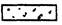
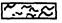
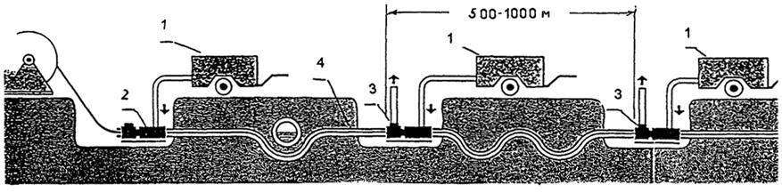

Министерство топлива и энергетики Российской Федерации
РОССИЙСКОЕ АКЦИОНЕРНОЕ ОБЩЕСТВО
«ГАЗПРОМ»
Инжиниринговая научно-исследовательская компания -
Всероссийский научно-исследовательский институт по
строительству трубопроводов и объектов ТЭК
АО «ВНИИСТ»
|
УТВЕРЖДЕНО |
|
|
Председателем Правления |
|
|
РАО «Газпром» |
|
|
Р.И. Вяхиревым |
|
|
22 мая 1997 г. |
ИНСТРУКЦИЯ ПО ПРОЕКТИРОВАНИЮ И
СТРОИТЕЛЬСТВУ ВОЛОКОННО-ОПТИЧЕСКИХ
ЛИНИЙ СВЯЗИ (ВОЛС) ГАЗОПРОВОДОВ
ВСН 51-1.15-004-97
|
СОГЛАСОВАНО: |
РАЗРАБОТАНО: |
|
Начальник Управления |
АО «ВНИИСТ» |
|
проектно-изыскательских |
Вице-президент |
|
работ и экспертизы проектов |
А.Д. Яблоков |
|
РАО «Газпром» |
|
|
В.И. Поддубский |
|
|
Начальник Отдела связи РАО «Газпром» |
|
|
В.И. Ростенко |
Москва 1997
Настоящая Инструкция разработана в развитие СНиП III-42-80 и СНиП 2.05.06-85. Инструкция определяет технологию и организацию проектирования и строительства волоконно-оптических линий связи (ВОЛС) газопроводов
Область применения настоящей Инструкции: линейные сооружения волоконно-оптических линий технологической связи газопроводов
При проектировании, строительстве и эксплуатации ВОЛС необходимо руководствоваться нормативными документами [1 - 19].
Пункты Инструкции, касающиеся организации и технологии прокладки волоконно-оптического кабеля связи (ВОК связи) в одной траншее с газопроводом, не отражены в действующих СНиП, носят рекомендательный характер и требуют отработки в трассовых условиях и внесения дополнений и изменений в СНиП
Инструкция предназначена для проектных, специализированных строительно-монтажных и эксплуатационных организаций связи системы РАО «Газпром».
Инструкция разработана и внесена АО «ВНИИСТ»
Яблоков А.Д. - руководитель разработки - канд. техн. наук,
Гаспарянц P.C - канд. техн. наук, Габелая Р.Д. - канд. техн. наук,
Аникин Е.А - канд. техн. наук
Редакционная комиссия:
РАО «Газпром» Поддубский В.И, Пугаченко В.Н, Ростенко В.И, Федоров М.С, Чупикин В.П,
|
АО «Газтелеком» |
Гордеев А.А. - канд. техн. наук, |
|
Горчаков А.П - канд. физ.-мат. наук, |
АО «Стройтрансгаз» Михайлов В.П,
АО «Гипроспецгаз» Круглова Н.А,
АО «Гипрогазцентр» Беляев Г.Л
Инструкция согласована с
Госгортехнадзором РФ (письмо № 10-03/191 от 14.04.97 г.),
Минстроем РФ (письмо № 13-228 от 16.04.97 г.)
Введена в действие приказом по РАО «Газпром» от 22 мая 1997 г., № 78
1.1. В основу проектирования ВОЛС технологической связи газопроводов должны быть положены требования, предъявляемые к международным линиям связи, обеспечивающие их высокую надежность, функциональное совершенство и экономичность.
1.2. Проектная документация на ВОЛС должна выполнять требования Государственных (СНиП, ГОСТ, ТУ) и ведомственных (ВНТП, ВСН, ОСТН, СП, ПУЭ и др.) РАО «Газпром» и Минсвязи России нормативных документов, а также рекомендации международных организаций - МККТТ, МЭК, МСЭ и положений настоящей Инструкции.
1.3. ВОЛС технологической связи газопроводов должны проектироваться на основе:
утвержденного технического задания на систему связи газопроводов;
принятых качественных характеристик организации и технологии строительства газопровода и ВОЛС;
материалов грунтовых и гидрологических изысканий и данных о климатических условиях трассы строительства;
учета опыта сооружения газопроводов и кабельных линий технологической связи в аналогичных условиях прохождения трассы строительства;
характеристик проектируемых волоконно-оптических систем связи, условий их эксплуатации;
учета местных условий строительства;
технико-экономического обоснования возможных (предлагаемых) вариантов проектного решения.
1.4. Главным критерием выбора способа размещения и прокладки волоконно-оптического кабеля (ВОК) связи является обеспечение требуемых качественных показателей волоконно-оптической линии связи при минимальных затратах на сооружение и эксплуатацию ВОЛС газопровода.
1.5. При проектировании магистральных, зоновых, промысловых, местных, межстанционных соединительных, распределительных и абонентских ВОЛС, как правило, следует предусматривать однопролетные линии - участки линейного тракта между двумя обслуживаемыми регенерационными пунктами (ОРП), работающие на длинах волн 1,3 и 1,55 мкм.
При этом на линиях длиной менее 10 км - с пониженной мощностью излучения. На линиях средней - (до 50 км) и большой - (до 120 км) протяженности - на длинах волн соответственно - 1,3 и 1,55 мкм.
1.6. При планировании трассы прокладки ВОЛС необходимо учитывать установленные минимальные радиусы изгиба и максимально допустимые значения механических нагрузок на ВОК связи.
1.7. Следует предусматривать проработанные на практике методы прокладки кабеля, обеспечивающие требуемые показатели качества и надежности сооружаемой ВОЛС.
1.8. Оптическая длина проложенных и смонтированных на элементарных кабельных участках ВОК связи должна соответствовать протяженности трассы, умноженной на коэффициент К = 1,015.
1.9. Температурный диапазон работы подземных волоконно-оптических линий связи газопроводов должен определяться в интервале температур от -40 °С до +70 °С, а в сложных климатических условиях от -55 °С до +85 °С.
Для ВОК связи, подвешиваемых на воздушных линиях электропередачи, нижний предел температур определяется климатической зоной и должен соответствовать минимальной зафиксированной температуре в зоне подвески кабелей.
Данные характеристики гарантируются фирмой-поставщиком ВОК связи.
1.10. Для обеспечения максимальной однородности характеристик ВОЛС и минимизации количества муфтовых соединений на регенерационном участке (минимизации затухания на участках ВОЛС) проектом должен быть предусмотрен подбор строительных длин ВОК по конструктивным данным (марка, тип оптического волокна, защитные покрытия) и по размерам строительных длин.
На регенерационном участке следует предусматривать волоконно-оптический кабель связи, включая ЗИП, только одного завода-изготовителя.
1.11. В проекте и заказных спецификациях должны быть указаны все типы и характеристики расходных материалов, используемых для сооружения ВОЛС: муфт, комплектов монтажных материалов, коннекторов, оптических конечных модулей и других комплектующих устройств. Число монтажных комплектов должно на 10 - 15 % превышать число строительных длин ВОК связи.
1.12. Для эксплуатации ВОЛС технологической связи в проекте и заказных спецификациях должны быть предусмотрены комплекты монтажных материалов, аппаратура и оборудование исходя из нормативов на одно ЛПУМГ:
комплекты материалов для монтажа соединительных муфт;
комплект оборудования для монтажа соединительных муфт;
установка для сварки волокон;
устройство скола волокон;
оптический рефлектометр с динамическим диапазоном не менее 32 дБ для проведения сквозных сдаточных измерений и до 27 дБ - на промежуточных этапах;
оптический генератор на длину волны 1,55 мкм (1,3 мкм) с мощностью не менее - 7 дБм;
оптический приемник на длину волны 1,55 мкм (1,3 мкм) с чувствительностью не менее 65 дБм.
Контрольно-измерительное и монтажное оборудование должно предусматриваться, как правило, в специальных передвижных измерительно-монтажных лабораториях, в которых проводят сварку волокон и монтаж соединительных муфт.
1.13. В составе проекта выполняют раздел «Организация связи на период строительства ВОЛС». Схема организации связи должна обеспечивать оперативное управление ходом строительства и взаимодействие членов бригад в процессе проведения укладочных, монтажных, измерительных и приемосдаточных работ. При организации связи по возможности должны использоваться существующие на данном участке средства УКВ связи (генподрядчика, эксплуатации газопровода и др.).
1.14. Проектом строительства ВОЛС должно быть предусмотрено восстановление нарушенного в процессе строительства почвенного, мохового, торфяного и растительного слоя, а также восстановление русел постоянных и временных водотоков или устройство специальных дренажных сооружений.
2.1. Используемые для сооружения ВОЛС технологической связи кабельная продукция, материалы, оборудование и др. должны быть сертифицированы и соответствовать техническим условиям на поставляемую продукцию.
2.2. ВОК связи, применяемые для технологической связи газопроводов, классифицируются по:
назначению линий связи:
внешние: магистральные, промысловые, межстанционные соединительные, распределительные;
внутренние: абонентские, внутристанционные соединительные;
конструкции сердечника: с профилированным сердечником, с концентрической повивной скруткой, пучковой скрутки, ленточные кабели;
типу защитных оболочек: металлическая/пластмассовая оболочка с металлическими лентами или с металлическим слоем, пластмассовая оболочка, пластмассовая оболочка с силовыми элементами (проволоки), в т.ч. впрессованными в оболочку, бронированная оболочка;
условиям прокладки: подземные, (грунт, кабельная канализация) в тоннеле, внутри зданий, подводные, подвесные (воздушные).
2.3. ВОК связи конструктивно подразделяются на:
кабели, содержащие металлические элементы: проводники для служебной связи и дистанционного электропитания линейных регенераторов, оболочки, бронепокровы;
полностью диэлектрические кабели.
кабель типа Р с [Рр] > 240 kH для прокладки без заглубления в донный грунт через большие судоходные реки, а также прибрежной прокладки морских участков. Кабель должен иметь двойную металлическую броню;
кабель типа М с [Рр] > 80 kH для подвески в качестве грозозащитного троса на линиях электропередачи;
кабель типа 1 с [Рр] > 80 kH для прокладки с заглублением в донный грунт через судоходные и несудоходные реки, а также реки, разливающиеся во время паводков. Кабель должен иметь двойную металлическую броню;
кабель типа 2 с [Рр] > 20 kH для прокладки в скальных, каменистых и сложных грунтах, а также на участках с большой вероятностью повреждений. Кабель, как правило, имеет металлическую броню. Допускается применение вместо металлической брони экструдированной пластиковой трубы, армированной укрепляющими синтетическими нитями, вьдерживающими растягивающее усилие не менее 20 кН;
кабель типа 3 с [Рр] > 7 kH для прокладки в легких грунтах. Кабель, как правило, имеет металлическую броню. Допускается применение вместо металлической брони экструдированной пластиковой трубы, армированной укрепляющими синтетическими нитями, вьдерживающими растягивающее усилие не менее 7 кН;
кабель типа 4 с [Рр] > 2,7 kH для прокладки в кабельной канализации или в заранее проложенных трубах.
2.5. Кабели 1 - 3 типов должны допускать механизированную прокладку вибрационными кабелеукладчиками.
2.6 Прочность на сжатие для кабелей 1 - 3 типов составляет не более 10 kH, для кабелей 4 типа - не более 3 kH. В соответствии с публикацией МЭК 794 -1, Е3 после 15 минутного воздействия, не превышающей норму сдавливающей нагрузки, должны отсутствовать вмятины и приращение затухания.
2.7. Все кабели должны выдерживать при температуре -30 °С в течение не более 20 минут 20 циклов изгибов на угол 90° на валу радиусом 250 мм для кабелей типов 3 и 4 и на валу радиусом, равным 20-ти кратному диаметру кабелей для кабелей типов 1 и 2.
2.8. Ударостойкость при силе одного удара для кабелей:
типа Р и типа 1 - 100 Н·м;
типа 2 - 50 Н·м;
типа 3 и типа 4 - 25 Н·м.
В соответствии с публикацией МЭК 794-1, Е4 после одного ударного воздействия на кабель, не превышающего указанных параметров допустимой силы удара, должны отсутствовать вмятины и приращение затухания.
2.9. Внешняя оболочка ВОК связи должна быть стойкой к свету и повреждениям грызунами.
2.10. Поставляемые ВОК связи должны выполнять требования экологической безопасности: полное отсутствие в кабелях или исходном сырье для их изготовления опасных или токсичных материалов.
2.11. Требования, изложенные п.п. 2.4 - 2.9. Инструкции, должны быть оговорены в Технических условиях на поставляемый ВОК связи.
2.12. Рабочий диапазон длин волн ВОК, используемых для систем технологической связи газопроводов, определяется окнами 1300 - 1324 нм и 1525 - 1575 нм. Хроматическая дисперсия при этом не должна превышать 3,5 пс/нм.км для волокон G.653 и 18 пс/нм.км для волокон G.652.
Коэффициент затухания на длине волны 1,55 мкм не должен превышать 0,21 - 0,22 дБ/км (в отдельных случаях допускается 0,23 дБ/км).
2.13. Гидрофобное заполнение кабелей не должно ухудшать параметры передачи в течение всего срока службы и всем диапазоне рабочих температур оптического кабеля.
2.14. В заказной спецификации на оптические кабели для систем технологической связи газопроводов должны быть приведены:
общие положения, в которых указываются требуемые типы и количество кабелей;
график, адреса и условия их поставки.
2.15. В целях минимизации количества муфтовых соединений ВОК связи на заданном регенерационном участке (например, КС-КС) заказная спецификация должна предусматривать поставку конкретных значений строительных длин ВОК связи, которые отражаются в линейной схеме раскладки кабеля и определяются:
условиями прохождения трассы газопровода и ВОЛС (категория грунтов, болота и т.д.);
принятым способом прокладки ВОК связи;
наличием переходов через дороги и другие инженерные коммуникации;
формой транзитных колодцев и смотровых устройств кабельной канализации;
доступностью подъезда к месту расположения муфты при эксплуатации ВОЛС.
2.16. Нормы запаса ВОК связи:
при прокладке непосредственно в грунт запас на укладку ВОК связи в траншеи, котлованы, разделку при монтаже и др. - в размере 4,0 %;
при прокладке в ПЭВД трубке запас на укладку ВОК связи в котлованы (смотровые устройства), разделку при монтаже и др. - в размере 6,0 %;
при прокладке через водоемы шириной до 1 км средствами гидромеханизации запас на укладку по рельефу дна и с учетом выноса кабеля на переходе против течения принимается в размере 14 %, при ширине более 1 км - по проекту;
при прокладке на опорах вдольтрассовой ВЛ 6 - 10 кВ с учетом запаса кабеля на разделку при монтаже - в размере 6,0 %.
При монтаже соединительной муфты и выкладке ВОК связи длина каждого конца кабеля:
а) ВОК проложен в ПЭВД трубке (строительная длина кабеля - до 4 км):
при монтаже в колодце - не менее 12 м;
при монтаже в монтажно-измерительной лаборатории - не менее 12 м.
б) ВОК проложен непосредственно в грунт или кабельную канализацию (из асбестоцементных труб):
при монтаже в колодце - не менее 3 - 5 м;
при монтаже в монтажно-измерительной лаборатории - не менее 8 м;
в) ВОК подвешен на опорах вдольтрассовой ВЛ - не менее 30 м.
2.17. Конструкция и параметры соединительных муфт, предусматриваемые проектом, должны обеспечивать:
соответствие муфты условиям ее применения;
соединение всех волокон кабеля в заранее определенном порядке;
среднее значение вносимого затухания сростка - не более 0,05 дБ на волокно;
восстановление целостности оболочки кабеля;
непрерывность механических параметров оптического кабеля;
герметичность соединения;
возможность перемонтажа муфты и повторного соединения волокон.
2.18. Для монтажа соединительных муфт в зависимости от их конструкции и типа могут быть предусмотрены методы:
«холодного» монтажа: заливочные компаунды, паста, клеи, механическое герметичное соединение;
«горячего» монтажа: сваривание полиэтиленовых муфт методом инжекции полиэтилена, использование термоусаживаемых материалов с адгезивным подслоем и др.
2.19. Муфта должна размещаться (в котловане, колодце, смотровом устройстве) таким образом, чтобы не ухудшать электрические и механические характеристики кабеля.
Проектом должна быть предусмотрена защита муфты от механических и климатических воздействий.
2.20. Защитные трубки ПЭВД для ВОК связи должны:
иметь срок службы - не менее 50 лет;
выдерживать, без потери формоустойчивости, изгиб радиусом не менее 10-ти кратного наружного диаметра трубки;
иметь электрическую прочность не менее 7 MB/10 мм при температуре -50 °С и 5,5 МВ/10 мм - при температуре +50 °С;
выдерживать кратковременное давление - не менее 1,5 МПа;
иметь круглое сечение с равномерной толщиной стенки;
иметь овальность не более 2 % и допуск по толщине не более +5 %;
быть изготовлены из полиэтилена высокого давления или аналогичного по своим механическим характеристикам и параметрам надежности материала. Для трубок, прокладываемых в кабельной канализации, в коллекторах, зданиях, должны быть использованы негорючие (слабогорючие) материалы, не выделяющие ядовитых продуктов горения;
иметь гладкую внутреннюю поверхность и внутреннее силиконовое или другое покрытие, обеспечивающее коэффициент трения между прокладываемым ВОК связи и внутренней поверхностью трубки не выше 0,1;
иметь рабочий диапазон температур:
при укладке от -10 °С до +70 °С;
при хранении от -60 °C до +100 °С;
при эксплуатации от -60 °С до +100 °С;
иметь цвет: эксплуатационных - оранжевый, резервных - черный;
иметь соответствующую маркировку, нанесенную прочной и контрастной краской.
Рекомендуемые типоразмеры защитных трубок приведены в табл. 1.
Таблица 1
Типоразмеры защитных ДЭВД трубок
|
Толщина стенки, мм |
|
|
50 |
4,6 |
|
63 |
5,8 |
|
70 |
5,5 |
|
75 |
6,9 |
|
90 |
8,2 |
|
110 |
6,3 (10) |
2.21. Размеры строительных длин трубок и условия их поставки (барабаны, бухты) устанавливаются контрактом между поставщиком трубки и заказчиком.
2.22. Нормы запаса защитной ПЭВД трубки на прокладку в грунт, разделку, монтаж и др. должны приниматься в размере 3,0 % от общей протяженности защитного трубопровода.
2.23. Суммарная площадь сечения размещаемых в защитной ПЭВД трубке кабелей (с учетом развития системы связи) не должна превышать 20 - 25 % площади защитной трубки.
2.24. Прокладка электрических кабелей связи, КИПиА, ТМ и др. в ПЭВД трубке, занятой оптическим кабелем, не допускается.
2.25. Соединители и концевые заглушки (уплотнители) защитных ПЭВД трубок должны:
обеспечивать герметичность защитного трубопровода;
иметь механическую прочность не ниже чем у трубок;
выдерживать кратковременное внутреннее избыточное давление 1,5 МПа.
2.26. Для предупреждения механических повреждений волоконно оптического кабеля связи при проведении земляных работ в зоне размещения ВОЛС проектом должна быть предусмотрена прокладка на всем протяжении трассы над кабелем (на глубине 0,6 - 0,8 м от поверхности земли) предохранительной сигнальной (сигнально-поисковой) полимерной ленты. Применение сигнально поисковой ленты (со встроенными металлическими проводниками) позволит кроме того осуществлять поиск и фиксацию трассы диэлектрического ВОК связи.
3.1. ВОЛС технологической связи газопроводов располагают, как правило, с левой стороны трубопровода по ходу продукта (рис. 1). Расстояние между ВОЛС и трубопроводом для различных условий прохождения трассы определено требованиями СНиП 2.05.06-85 [3].
3.2. Изменение расположения ВОЛС по отношению к газопроводу, принятое проектной организацией, должно быть обосновано и согласовано с заказчиком.
3.3. При прохождении газопровода по искусственным насыпям, шириной по верху до 10 м, ВОК связи прокладывают в насыпи; при этом расстояние между ВОК и трубой может быть сокращено до 6 м независимо от диаметра газопровода.
3.4. В стесненных условиях прохождения газопровода, в т.ч. в условиях горных долин и на водоразделах, расстояние между ВОК и газопроводом может быть сокращено до 6 м. При этом ВОК связи не должен попадать в полосу, предусмотренную для прохождения строительной и эксплуатационной техники.
3.5. Расстояния от прокладываемого ВОК связи до других подземных или наземных сооружений (мосты, ВЛ, кабельные канализации, газонефтепроводы, кабели связи и радиофикации, автомобильные и железные дороги, теплосети и т.п.) при сближении и пересечении с последними определяются проектом и должны соответствовать требованиям СНиП 2.05.06-85 [3], Отраслевым строительно-технологическим нормам на монтаж сооружений и устройств связи, радиовещания и телевидения, ОСТН-600-93 Минсвязи России [10] и Ведомственным нормам ВСН 116-93 Минсвязи России [13].
3.6. При прокладке ВОЛС технологической связи в горных условиях ВОК располагают на горных полках для укладки газопровода, как правило, с нагорной стороны полки в отдельной траншее на расстоянии не менее 3 метров от оси газопровода независимо от его диаметра.
Рис 1. Схема размещения ВОЛС в полосе отвода газопровода:
ВОК - волоконно-оптический кабель связи; Г - д - газопровод диаметром 1420 мм;
1- песок, мягкий грунт, 2- сигнальная (сигнально-поисковая) лента.
3.7. При надземной прокладке газопровода на оползневом участке предусматривают крепление, защищенного трубой или кожухом ВОК, к трубопроводу.
3.8. В случае, когда для защиты газопровода на оползневом участке предусмотрена подпорная низовая стена, ВОК связи допускается прокладывать:
по наружной поверхности подпорной стены с устройством компенсационных изгибов через 15 - 20 м для создания запаса кабеля в случае смещения участка стены при оползне. Радиус изгиба кабеля должен быть не менее допустимого в соответствии с техническими условиями на кабель. На всей длине прокладки кабель должен быть защищен (металлическая труба, кожух и т.п.);
«змейкой» в траншее шириной 900 - 1000 мм у низовой подпорной стены с устройством «постели» и присыпки кабеля мягким грунтом толщиной 10 см.
3.9. На подводных переходах газопровода через горные реки ВОК связи прокладывают в русле реки в одной траншее с газопроводом.
На небольших горных реках допускается предусматривать отдельную траншею для подводной прокладки ВОК связи. Глубина траншеи должна быть принята с учетом возможных деформаций русла, но не менее 1,5 м.
3.10. При надземных (надводных) переходах газопровода через естественные и искусственные препятствия проектом следует предусматривать крепление кабеля, защищенного трубой или кожухом, к газопроводу.
3.11. При подземных переходах газопровода через шоссейные или железные дороги следует предусматривать, как правило, прокладку ВОК связи совместно с газопроводом. Защитный футляр для кабеля связи должен иметь наружное изоляционное покрытие и может располагаться как внутри, так и снаружи кожуха трубопровода.
При размещении внутри кожуха защитный футляр крепится к изолированному трубопроводу в общем пакете с футеровкой трубопровода в верхнем секторе в пределах 15° - 40° от вертикальной оси трубы.
При наружном размещении футляр приваривается снаружи к защитному кожуху в верхней его части. Места сварки изолируются.
Проектом и технологической схемой сооружения перехода должны быть предусмотрены меры, обеспечивающие сохранность футляра кабеля связи при монтаже кожуха и протаскивании плети трубопровода в кожух, а также электроизоляцию между футляром кабеля, кожухом и трубопроводом при внутреннем размещении футляра и электроизоляцию между кожухом и трубопроводом - при наружном размещении футляра.
3.12. На переходах через некатегорийные автодороги или автодороги, где по правилам не требуются согласования переходов закрытым способом, в грунтах I - IV группы допускаются несовмещенные кабельные переходы.
3.13. На совмещенных переходах в защитной трубе проектом должна быть предусмотрена заготовка стальной проволоки (троса) для затягивания ПЭВД трубки и ВОК связи.
3.14. Прокладка ПЭВД трубки без защитных футляров (кожухов) на переходах, при пересечении мест переездов автотранспорта, проезжей части улиц и др. запрещена.
3.15. Пункты 3.16 - 3.22 настоящей Инструкции, определяющие требования к прокладке волоконно-оптического кабеля связи в одной траншее с газопроводом, не отражены в действующих нормативных документах и носят рекомендательный характер.
а). ВОК связи в защитной ПЭВД трубке допускается прокладывать в одну траншею с газопроводом в устойчивых грунтах всех категорий, кроме участков: болот, слабых, просадочных и пучинистых грунтов, а также грунтов с низкой защемляющей способностью, где предусмотрена балластировка и закрепление газопроводов на проектных отметках;
б). При прохождении участков газопровода, где велика вероятность повреждения кабеля из-за механических воздействий при сооружении и эксплуатации, в т.ч.: на оползневых участках, на участках естественных вертикальных и горизонтальных кривых трассы газопровода, на продольных уклонах трассы газопровода более 27°, в местах расположения захлестов, узлов подключения камер пуска и приема очистных устройств и др., проектом должны приниматься меры, исключающие повреждения ВОК связи.
В местах размещения линейных кранов и другой линейной арматуры газопровода защитную ПЭВД трубку следует прокладывать вне монтажной зоны.
3.17. Схема размещения ВОК связи, прокладываемой в защитной ПЭВД трубке в одной траншее с газопроводом, приведена на рис. 2.
3.18. Защитная трубка прокладывается от газопровода слева по ходу газа в специально подготовленной зоне (на «постели» из просеянного песка или мягкого грунта) на глубине 1,2 м от поверхности земли.
Расстояние от оси газопровода до места размещения защитной трубки определяется по формуле:
Дтр/2 + 300 (мм),
где: Дтр - наружный диаметр газопровода, мм.
В условиях скальных грунтов глубина заложения защитной трубки - не менее 0,5 м (с учетом устройства «постели» из просеянного песка или мягкого грунта толщиной не менее 10 см).
Рис. 2 Схема размещения защитной трубки с ВОК связи в траншее газопровода 1420 мм
ВОК - защитная трубка с ВОК связи, Г - д - газопровод; СЛ - сигнальная (сигнально-поисковая) лента
Проектные профили траншеи:
1 - обычные условия (1:0,5, V = 8,1 м3 на 1 м траншеи), глубина прокладки ВОК - 1,2 м, 2 - песчано-баранные грунты (1:1, V = 10,1 м3 на 1 м траншеи), глубина прокладки ВОК - 1,2 м, 3 - скальные грунты (V = 4,7 м3 на 1 м траншеи), глубина прокладки ВОК - 0,7 м,
 
3.19. Соединительные муфты ВОК связи размещают в специальных защитных устройствах или смотровых колодцах и располагают от оси газопровода:
при прокладке в одной траншее с газопроводом - на расстоянии не менее 3 м;
при прокладке в отдельной траншее - на расстоянии прокладки кабеля.
Место размещения муфт не должно находиться в полосе вдольтрассового транспортного проезда.
3.20. При подходе к месту расположения соединительной муфты кабеля на расстоянии не менее 10 м от места ее установки трасса прокладки трубки отходит от оси газопровода по кривой. Радиус изгиба трубки не должен быть менее допустимого, указанного в технических условиях (25 наружных диаметров трубки).
Для установки оконечного оборудования продувки кабеля и монтажа смотрового колодца муфты разрабатывают котлован.
3.21. В местах размещения промежуточного компрессорного оборудования для продувки строительной длины ВОК трубка отходит от своей оси прокладки в сторону от газопровода на расстояние не менее 1 м (при длине участка не менее 10 м).
3.23. Для участков трассы с сезонным подтоплением, а также на местности с продольным уклоном свыше 11° и подверженной эрозии, следует предусматривать проектные решения по предотвращению размыва траншеи (одерновка, геотекстиль и др.).
3.24. При пересечении ПЭВД трубопроводом водных преград и на участках с высоким уровнем грунтовых вод проектом должна предусматриваться его балластировка с использованием мягких пригрузов (например из нетканых синтетических материалов (НСМ), тканных мешков с грунтом, эластичных покрытий и др.), укладываемых непосредственно на трубопровод.
Количество и масса пригрузов, их расположение на трубопроводе определяются расчетом с учетом устойчивости и прочности трубопровода (см. Свод правил по проектированию и строительству пластмассовых газопроводов. СП 142-01-95 [11]).
Дополнительная пригрузка трубопровода на сезонно-подтопляемых участках трассы (при условии укладки труб в сухую траншею), как правило, не требуется.
3.25. Для предохранения наружной поверхности ПЭВД трубки от повреждений при протяжке ее в металлических или асбестоцементных футлярах в проекте следует предусматривать защиту трубки с помощью колец (прокладок) из полиэтилена (ПВХ и др.), закрепляемых через 2 - 3 м на наружной поверхности трубки липкой синтетической лентой.
4.1. Глубина прокладки ВОК технологической связи должна соответствовать СНиП 2.05.06.85 и ОСТН-600-93 [3, 10].
В грунтах I - IV группы глубина прокладки волоконно-оптического кабеля связи должна составлять 1,2 м.
В грунтах V группы и выше при наличии над скальной породой поверхностного растительного слоя различной мощности, а также в грунтах IV группы, разрабатываемых взрывным способом или отбойными молотками при тех же условиях, - 0,6 м при глубине траншеи 0,7 м с устройством постели из песчаных грунтов толщиной не менее 10 см и присыпки поверху кабеля на толщину 10 см. При этом заглубление в скальную породу не должно превышать 0,4 м при глубине траншеи 0,5 м.
В грунтах V группы и выше при выходе скалы на поверхность, а также в грунтах IV группы, разрабатываемых взрывным способом или отбойными молотками, - 0,4 м при глубине траншеи 0,5 м с устройством постели из песчаных грунтов толщиной не менее 10 см и присыпки сверху кабеля на толщину 10 см.
4.2. На участках трассы с глубоким сезонным промерзанием грунта, на поливных и орошаемых землях с арычной системой орошения глубина прокладки ВОК определяется проектом. При этом должна обеспечиваться сохранность кабеля при проведении сельскохозяйственных и других работ, а также при эрозии почвы.
4.3. При укладке ВОК связи в защитную трубку ПЭВД глубина заложения трубок (по их осям) должна составлять 1,2 м независимо от глубины заложения газопровода в земле (при размещении кабеля в одной траншее с газопроводом).
4.4. Ширина траншеи, разрабатываемой механизированным способом, определяется размерами рабочего органа (ковша, фрезы). Ширина траншеи поверху при ручном способе разработки определяется в зависимости от ее глубины, грунтовых условий, а также числа прокладываемых ВОК [13].
5.1. Волоконно-оптический кабель связи в зависимости от его конструкции и условий строительства прокладывается:
непосредственно в грунтах различных категорий (кроме подверженных мерзлотным деформациям), в болотах, под водой (с заглублением и без заглубления в донный грунт);
в предварительно уложенный полиэтиленовый (ПЭВД) трубопровод с внутренним покрытием, обеспечивающим коэффициент трения между ВОК связи и трубкой не более 0,1;
в кабельную канализацию, блоки, шахты, коллекторы (на технологических площадках, на территориях КС, в жилпоселках, населенных пунктах и др.);
подвешивается на опорах вдольтрассовой ВЛ газопровода.
Выбор способов прокладки ВОК связи на участках трассы, грунты которых подвержены мерзлотным деформациям, должен быть обоснован проектом.
5.2. Все строительные длины ВОК связи должны укладываться в соответствии с укладочной ведомостью, составленной при группировании строительных длин на кабельной площадке.
На участках между регенерационными пунктами (ОРП) следует укладывать строительные длины ВОК одного завода-изготовителя (фирмы-поставщика), что позволит минимизировать вносимые затухания сростков при монтаже ВОК (равные диаметры поля моды и эксцентриситета волокон концов кабеля, а также одинаковый химический состав волокон обеспечивают требуемые качественные показатели сварки при соединении волокон).
5.3. В проектной рабочей документации должны быть обоснованы схемы прокладки ВОК на конкретных участках, в т.ч.:
обоснован способ прокладки ВОК;
приведена расчетная схема прокладки ВОК (в защитной ПЭВД трубке, в кабельной канализации, при подвеске на опорах ВЛ);
заданы допустимые скорости прокладки ВОК связи;
определены меры, обеспечивающие минимальные тяговые усилия на ВОК при прокладке и т.п.
5.4. Механизированную прокладку ВОК связи непосредственно в грунт выполняют:
в заранее подготовленную траншею (экскаваторами, взрывным способом, перфораторами, вручную);
ножевым кабелеукладчиком без образования траншеи.
5.5. При прокладке ВОК связи кабелеукладчиком в проекте следует предусматривать меры, обеспечивающие качественное выполнение работ и исключающие повреждение ВОК, в т.ч.:
предварительную пропорку трассы на всю глубину прокладки в лесной зоне, на болотах 1 типа, на крутых уклонах и в горных условиях, в грунтах с каменистыми включениями, грунтами 3 - 4 групп и т.п.;
одновременный оптический контроль целостности прокладки строительной длины ВОК связи в тяжелых условиях трассы (лесная зона, горные условия, грунты 3 - 4 группы, грунты с каменистыми включениями и т.п.);
оснащение кабелеукладчиков специальным оборудованием, исключающим превышение допустимых нагрузок на ВОК связи.
5.6. Прокладку ВОК связи в открытую траншею следует предусматривать:
при подходах к совмещенным и несовмещенным переходам, к линейным кранам;
на территории наземных сооружений газопровода (КС, ГРС, ПХГ и др.);
на пересечениях с подземными коммуникациями;
в траншеях, образованных взрывным способом в плотных скальных грунтах;
на продольных (свыше 10°) и поперечных (свыше 8°) уклонах трассы;
на коротких участках трассы, где нецелесообразно применять прокладку кабелеукладчиком.
5.7. При проектировании ВОК связи в горных условиях необходимо выполнять следующие требования:
на уклонах трассы 30° - 45° следует предусматривать кабели типа 2, свыше 45° - кабель типа 1;
на продольном уклоне до 10° в грунтах I - IV группы кабель можно прокладывать ножевым кабелеукладчиком с обязательной предварительной пропоркой трассы;
экскаватором (ковшовым, роторным) допускается отрывать траншеи для прокладки кабеля на продольном уклоне до 30° с предварительным рыхлением грунта;
на продольных уклонах трассы свыше 30° траншею для прокладки ВОК связи отрывают вручную «змейкой» с отклонением от средней линии на 1,5 м и длиной отклонения до 5 м;
на крутых склонах должны быть приняты меры по удержанию насыпного грунта «постели» и присыпки в траншее (укладка через 1 - 5 м мешочков с мягким грунтом, установка перегородок из стирольного пенопласта, использование соломенных и камышовых матов и др.);
в проекте должны быть предусмотрены решения по предотвращению размывания траншеи с кабелем на продольных и поперечных уклонах грунтовыми или атмосферными водами с учетом расхода и скорости водных потоков (покрытие траншеи водоупорным грунтом, одиночное и двойное мощение булыжным камнем, покрытие железобетонными плитами, сооружение водосборных лотков, устройство стенок-запруд и др.).
5.8. Разработка траншей для прокладки кабеля в скальных грунтах проводится генподрядчиком, сооружающим газопровод.
5.9. При переходах ВОЛС через автомобильные и железные дороги концы защитных футляров выводят по обе стороны от подошвы насыпи (бровки) на длину не менее 1 м.
5.10. Для бестраншейной прокладки футляров на кабельных переходах методом горизонтально-направленного (наклонного) бурения могут быть использованы технологии с применением буровых установок Grundodrill (Германия), DD-40 (США) и др.
5.11. Для прокладки ВОК связи в защитных ПЭВД трубках методом вдувания в проекте предусматривают специальное компрессорное оборудование, как правило, с рабочим давлением до 1 - 1,5 МПа, производительностью до 10 м3/мин, температурой вдуваемого воздуха не более 60 °С (для исключения образования конденсата в трубке при продувке), например CABLEJET и SUPERJET фирмы PLUMETT (табл. 2).
Таблица 2
Основные характеристики специального компрессорного оборудования CABLEJET и SUPERJET фирмы PLUMETT для продувки ВОК связи
|
Номинальная скорость прокладки кабеля в ПЭВД трубке, м/мин |
10 - 80 |
|
|
2. |
Диаметр протягиваемого кабеля, мм |
|
|
CABLEJET |
9 - 19 |
|
|
SUPERJET |
12 - 32 |
|
|
3. |
Номинальный диаметр трубки, мм |
25 - 63 |
|
4. |
Давление воздуха при прокладке кабеля, бар |
8 - 12 |
|
5. |
Максимальная производительность компрессора, м3/мин |
12 |
|
6. |
Масса, кг: |
|
|
CABLEJET |
42 |
|
|
SUPERJET (без гидроагрегата) |
72 |
5.12. Проектом могут быть предусмотрены два способа вдувания ВОК в защитный ПЭВД трубопровод:
с помощью силового калибра;
без силового калибра прямым вдуванием кабеля в трубопровод.
В проекте должна быть приведена схема расстановки оборудования для продувки ВОК связи по трассе.
5.13. Максимально возможная длина участка протягивания ВОК в ПЭВД трубопровод методом вдувания определяется:
рельефом трассы;
прямолинейностью уложенного трубопровода;
коэффициентом трения кабеля в трубке;
чистотой внутренней поверхности трубки и оболочки кабеля;
отношением внутреннего диаметра трубки к диаметру кабеля;
массой и жесткостью кабеля;
характеристиками используемого компрессорного оборудования.
Использование промежуточного оборудования для вдувания кабеля позволит продувать большие кабельные длины (до 4 км).
5.14. При составлении схемы продувки начало вдувания кабеля целесообразно предусматривать с транзитной точки трассы прокладываемой строительной длины в обе стороны по 500 - 1000 метровым секциям (в зависимости от типа применяемого оборудования). Типовая схема размещения оборудования приведена на рис. 3.
5.15. Концы защитных ПЭВД трубок в месте выхода (входа) кабелей должны герметизироваться (термоусаживаемыми манжетами, проходными герметизирующими втулками и др.).
5.16. При разработке оптимального плана протяжки ВОК связи в трубопроводах (кабельной канализации) тяговыми лебедками необходимо предусматривать расположение тяговых лебедок таким образом, чтобы обеспечивать допустимый радиус изгиба кабеля на выходе из трубопровода, а также длину кабеля на выходе, достаточную для выкладки и монтажа.
5.17. На сложных участках трассы и при наличии больших строительных длин в случае, когда невозможно полностью протянуть в трубопроводе строительную длину кабеля, прокладку кабеля допускается предусматривать в двух направлениях с транзитной точки трассы (наиболее рационально соотношение плеч 1/3 : 2/3) участка (промежуточные транзитные колодцы, углы поворота трассы, трубопровода и кабеля связи, места захлестов трубопровода и др.). При этом большая длина ВОК прокладывается вначале, затем оставшийся кабель сматывается с барабана, укладывается на землю, покрытую пленкой или НСМ, восьмеркой или большими петлями вдоль трассы с соблюдением допустимых радиусов изгиба. Затем кабель прокладывают в другую сторону.
5.18. Соединительные муфты ВОК должны быть механически защищены. Запас кабеля располагается у муфты.

Рис 3. Схема размещения специального компрессорного оборудования при продувке ВОК связи
1 - компрессор, 2 - основное оборудование для продувки ВОК, 3 - вспомогательное оборудование для продувки ВОК, 4 - защитная ПЭВД трубка для ВОК.
5.19. В кабельных колодцах муфты и запас кабеля размещают (укрепляют) на консолях.
5.20. Трасса прохождения ВОК связи должна быть закреплена с помощью замерных столбиков и предупредительных знаков:
в местах установки муфт и кабельных колодцев;
в местах отхода ВОК связи от газопровода;
в местах перехода кабеля через железные или автомобильные дороги и водные преграды;
на углах поворота трассы кабеля;
на прямолинейных участках трассы через каждые 250 - 300 м.
5.21. На боковую грань столбика, обращенную к газопроводу, черной масляной краской наносят условные знаки и номера в соответствии с назначением столбика.
5.22. На болотах, при невозможности установки столбиков, трассу фиксируют металлическими шестами.
5.23. При прокладке диэлектрического ВОК (без металлических элементов) связи для определения его местоположения проектом предусматривают:
размещение над кабелем специальных маркеров (магнитов);
прокладку в одной траншее с ВОК связи изолированного металлического провода;
прокладку над кабелем предохранительной сигнально-поисковой полимерной ленты со встроенными металлическими проводниками.
5.24. Маркеры (магниты) располагают:
на прямых участках трассы через каждые 100 - 150 м;
в местах установки муфт и кабельных колодцев;
в местах отхода ВОК связи от газопровода;
в местах перехода кабеля через железные или автомобильные дороги и водные преграды;
на углах поворота кабеля.
В местах поворота трассы с радиусом менее 100 м маркеры размещают через 5 - 15 м в зависимости от условий прохождения трассы.
На малых радиусах поворота трассы (до 30 м) маркеры размещают через 2 - 5 м.
Глубина установки маркеров (магнитов) над кабелем определяется проектом в зависимости от их технических характеристик.
5.25. При применении изолированного проводника или сигнально-поисковой ленты концы металлических проводников выводятся столбики КИП, устанавливаемые в местах размещения муфт кабеля.
5.26. Прокладку ВОК связи на опорах вдольтрассовой ВЛ-6 - 10 кВ предусматривают в случае, когда прокладка кабеля в грунт нецелесообразна или практически затруднена (сложные природные, грунтовые и ситуационные условия прохождения трассы технологической связи - вечная мерзлота, скальный грунт, болота, водные препятствия, пересечения с коммуникациями и инженерными сооружениями и др.).
Принятие решения о прокладке ВОК связи на опорах ВЛ принимается в каждом конкретном случае на основании проработки ТЭО.
5.27. Подвеску ВОК связи на опоры вдольтрассовой ВЛ-6 - 10 кВ следует предусматривать только при сооружении ВЛ в габаритах линии электропередач 35 - 110 кВ (высота опор ВЛ 22,6 или 26 м). Должны быть предусмотрены меры электробезопасности при эксплуатации ВОК связи в соответствии с требованиями Правил устройства электроустановок. ПУЭ-88 [16].
5.28. Подвеска ВОК связи на опорах ВЛ проводится только при полностью снятом на линии напряжении.
5.29. Для прокладки кабеля на опорах вдольтрассовой ВЛ следует использовать самонесущий ВОК связи.
5.30. Самонесущий волоконно-оптический кабель связи прокладывают под проводами ВЛ.
Расстояние между кабелем и проводами ВЛ, а также величины стрел провеса проводов и ВОК связи определяют при проектировании в зависимости от конструктивных характеристик ВЛ, требований электробезопасности, а также климатических условий прохождения трассы.
5.31. При проектировании ВЛ должны быть проведены расчеты максимальной нагрузки на ВОК связи по методу допустимых напряжений с учетом скорости ветра, гололедно-изморозовых отложений и температуры воздуха в соответствии с требованиями Правил устройства электроустановок. ПУЭ-88 [16].
Максимальные напряжения, возникающие в высших точках подвески ВОК, не должны превышать допустимые значения механических нагрузок на кабель.
5.32. Подвеску ВОК связи на опорах можно выполнять двумя способами:
жестким креплением кабеля к специальным кронштейнам на каждой опоре;
устройством анкерных участков.
5.33. Длина анкерного участка рассчитывается в зависимости от типа применяемого кабеля и реальных условий эксплуатации ВЛ.
5.34. Для закрепления кабеля на опорах ВЛ используют:
на промежуточных опорах - специальные кронштейны с проволочными захватами для заделки кабеля;
на анкерных (оконечных) опорах, в местах муфтовых соединений строительных длин кабеля - натяжные спирали, проволочные захваты с усиливающей оплеткой для оконечной заделки кабеля с серьгой.
5.35. Устройства крепления кабеля должны обеспечивать распределение нагрузки на кабель в точке подвеса (анкеровки), допустимый радиус изгиба кабеля, а также предотвращать возникновение вибраций кабеля в процессе эксплуатации.
5.36. Монтаж строительных длин кабеля осуществляют в местах установки анкерных опор. Соединительную муфту и запас кабеля (по 30 м с каждой стороны) закрепляют на опоре и защищают металлическим кожухом.
6.1. Особенности организации и технологии сооружения ВОЛС газопроводов обусловлены:
высокими требованиями к качественным характеристикам ВОЛС;
требованиями высокой квалификации специалистов: кабельщиков-монтажников, машинистов, механизаторов, измерителей, линейных ИТР, технического надзора;
использованием нетрадиционных способов прокладки ВОК связи (в одной траншее с газопроводом, подвески на опорах вдольтрассовой ВЛ 6 - 10 кВ и др.);
конструкцией и параметрами ВОК связи (критичность к механическим нагрузкам при строительстве и эксплуатации, небольшая масса погонного метра и малые размеры, большие строительные длины);
большими объемами входного контроля ВОК, контроля при прокладке и монтаже.
7.1. Строительство ВОЛС газопроводов выполняют, как правило, субподрядным способом.
Выбор субподрядной организации должен проводиться на конкурсной основе по результатам подрядных торгов - тендеров (проводимых, например, Тендерным комитетом РАО «Газпром»).
Субподрядная организация должна иметь лицензии на производство работ по сооружению ВОЛС и быть зарегистрирована на строительную деятельность в установленном законом порядке.
7.2. При производстве работ по сооружению ВОЛС технологической связи должны соблюдаться требования, предусмотренные Государственными стандартами (СНиП, ГОСТ), Ведомственными строительными нормами (ВСН), «Инструкцией по производству строительных работ в охранных зонах магистральных трубопроводов», ВСН 51-1-80. Мингазпром [19], действующими Правилами техники безопасности и настоящей Инструкцией.
7.3. Организация строительства ВОЛС должна базироваться преимущественно на поточном методе выполнения работ.
Линейный специализированный поток по сооружению ВОЛС технологической связи, как правило, включает следующие группы (бригады):
группу подготовки ВОК связи на кабельной площадке (проверка, испытание, ремонт кабеля на поврежденных барабанах, подбор и группирование строительных длин, вывоз кабеля на трассу);
группу подготовки и дополнительной планировки трассы прокладки ВОЛС (разбивка трассы, микропланировка рельефа трассы, принятие организационно-технических мер по обеспечению сохранности газопровода и пересекаемых коммуникаций т.п.);
группу по строительству несовмещенных кабельных переходов через естественные и искусственные преграды;
группу механизированной прокладки ВОЛС (прокладка ПЭВД трубки и ВОК связи кабелеукладчиком; отрывка траншей, устройство постели и присыпки, укладка ПЭВД трубки и ВОК связи в траншею, засыпка траншеи, затягивание кабеля в патрон на переходах, прокладка кабеля в кабельной канализации, вдувание ВОК связи в защитный ПЭВД трубопровод);
группу монтажно-измерительных работ (монтажно-измерительные работы, оборудование вводов ВОК связи);
группу завершающих работ (противоэрозионные работы, экологические мероприятия, фиксация трассы ВОЛС).
7.4. Должны предусматриваться индустриальные методы строительства, все работы по возможности должны быть максимально механизированы.
7.5. У субподрядчика должна действовать комплексная система производственного контроля качества выполнения работ, обеспечивающая проведение в полном объеме:
операционного контроля;
входного контроля;
выходного (приемочного) контроля;
инспекционного контроля.
Непосредственные исполнители работ, линейные ИТР, лаборатории по качеству должны быть оснащены соответствующими приборами, инструментами, приспособлениями, а также нормативно-технической документацией и технологическими картами на выполнение работ.
7.6. Рабочие, монтажники, измерители, линейный инженерно-технический персонал строительно-монтажных организаций связи должны пройти специальную переподготовку по согласованным с заказчиком программам, знать правила ведения работ в охранных зонах газо-нефте-продуктопроводов, обладать практическими навыками работы с ВОК связи и иметь соответствующие сертификаты (удостоверения), подтверждающие их квалификацию и дающие право проводить укладочные, монтажно-измерительные и другие работы на сооружаемых ВОЛС газопроводов.
7.7. Все бригады должны быть оснащены необходимой техникой, инструментом, приспособлениями и средствами малой механизации (приложение 1).
7.8 Строительно-монтажные организации и их подразделения должны быть аттестованы на готовность к проведению строительно-монтажных работ (приложение 2).
7.9. В условиях равнинно-лесистой местности, степи, болот I типа строительство ВОЛС выполняют, как правило, в весенне-летне-осенний период, в районах пустынь и полупустынь - в осенне-зимне-весенний период, в условиях болот II и III типа - в зимний период.
7.10. При определении сроков строительства ВОЛС технологической связи газопроводов необходимо исходить из принятой технологии строительства и организации работ, предусматривающей:
совмещенное строительство газопровода и ВОЛС на этапе выполнения изоляционно-укладочных работ на газопроводе со сдвигом во времени, обусловленным более высокими темпами работ при прокладке ВОК связи (в 1,2 - 4 раза);
организационно-технологическую последовательность выполнения работ, а именно:
строительство несовмещенных кабельных переходов через железные и автомобильные дороги;
прокладку ВОК связи;
прокладку ВОК связи через несовмещенные переходы;
монтажно-измерительные работы;
контрольно-измерительные и приемочные работы
7.11. Работы по прокладке ВОЛС технологической связи выполняют после завершения изоляционно-укладочных работ и засыпки газопровода.
7.12. Взаимоотношения между заказчиком, генподрядчиком, сооружающим газопровод, и субподрядчиком, сооружающим ВОЛС, регламентируются Правилами о договоре подряда на капитальное строительство в Российской Федерации в соответствии с действующим законодательством, а также условиями, определяемыми в тендерной документации.
7.13. Права и обязанности ответственных исполнителей работ (производитель работ, мастер, бригадир, рабочий) регламентируются должностными инструкциями и заключенными с ними контрактами.
7.14. При прокладке ВОК связи в защитном ПЭВД трубопроводе в одной траншее с газопроводом, укладку, монтаж, засыпку, очистку, испытание и герметизацию полиэтиленового трубопровода под ВОК связи производит генподрядчик. Подготовленный для прокладки ВОК связи защитный ПЭВД трубопровод передается субподрядчику по акту.
7.15. Контроль за качеством работ по укладке трубки в одну траншею с газопроводом ведут либо представители заказчика, либо фирма-поставщик трубки в соответствии с договором на шеф-монтаж (на условиях шеф-монтажа).
7.16. Генподрядчик до начала строительства передает субподрядчику:
техдокументацию по закрепленным на местности знакам полосы временного отвода земель, местам пересечения с коммуникациями, кабелями и т.п., местам перехода от одной категории трассы к другой;
разрешения на производство специальных работ (переходы через ж/д, автодороги, вблизи действующих трубопроводов, ЛЭП и др.);
разрешения от органов территориальной администрации на выполнение предусмотренных проектом работ на территории населенных пунктов для последующего получения ордеров на производство работ.
7.17. Получение, хранение, транспортировку на трассу и передачу субподрядчику в монтаж поставляемого фирмами волоконно-оптического кабеля и другого оборудования связи, а также технический надзор за качеством поставок и качеством строительства ВОЛС осуществляет заказчик (специализированная фирма независимого технадзора заказчика).
Заказчик поставляет ВОК и оборудование связи на приобъектный склад субподрядчика, место расположение которого определено в проекте организации строительства или в проекте производства работ.
7.18. Вся продукция связи должна поставляться в определенные с договорами и ППР сроки и иметь соответствующие сертификаты качества.
7.19. Генподрядчик до начала работ в соответствии с ППР обеспечивает:
вырубку и расчистку просек в полосе строительства ВОЛС;
проезд по трассе строительной и транспортной технике связи;
разбивку трассы линии связи и отчуждение земельных участков;
готовность к установленному ППР сроку кабельных переходов, выполняемых специализированными подразделениями (СУПТР);
устройство совмещенных с газопроводом переходов;
прокладку в одной траншее с газопроводом защитного ПЭВД трубопровода для ВОК связи, его монтаж, очистку, калибровку, испытания и сдачу субподрядчику.
Готовность фронта работ фиксируется двухсторонним актом.
7.20. До начала производства работ субподрядчик проводит подготовку строительного производства, обеспечивающую технологическое развертывание строительно-монтажных работ и взаимоувязанную деятельность всех участников строительства.
7.21. Общая организационно-техническая подготовка включает три этапа:
организационный;
мобилизационный;
подготовительно-технологический.
7.22. На организационном этапе должна быть получена и изучена ПСД, проведен ее входной контроль, проработаны вопросы поставки строительных материалов и конструкций, а также проблемы социального развития.
7.23. Организационный этап инженерной подготовки сооружения ВОЛС связи включает следующие мероприятия:
рассмотрение и приемку утвержденной в установленном порядке проектно-сметной документации;
заключение договоров подряда-субподряда на капитальное строительство, обеспечение ГСМ, медобслуживание и др.;
открытие финансирования строительства;
проведение рекогносцировки выбранных проектной организацией строительных площадок;
решение вопросов использования существующих коммуникаций, местных материалов и т.п.);
определение степени готовности генподрядчика по линейной части к передаче строительных площадок для производства работ в соответствии с п. 7.19;
разработку проектов производства работ (ППР);
оформление разрешений (ордеров) и допусков на производство работ;
формирование кадрового состава строительно-монтажных подразделений в соответствии с потребностью.
7.24. В проекте производства работ на основании материалов рабочей документации и натурного обследования трассы должны быть разработаны подробные планы и схемы прокладки (продувки, подвески) ВОК связи на конкретных участках трассы, включающие в т.ч.:
расчетные схемы прокладки ВОК в защитной ПЭВД трубке (подвеске на опорах ЛЭП);
последовательность операций при прокладке строительной длины ВОК;
характеристику используемых устройств и механизмов;
расстановку механизмов, людей на трассе прокладки;
расчеты тяговых усилий на ВОК с учетом поворотов и изменения направления трассы прокладки;
максимальные ожидаемые тяговые усилия на ВОК при прокладке;
допустимую скорость прокладки ВОК;
меры по обеспечению минимальных тяговых усилий на ВОК при прокладке.
7.25. На мобилизационном этапе с учетом конкретных условий строительства должны выполняться следующие внетрассовые подготовительные работы:
организация полевых жилых городков, площадок и помещений для хранения кабеля, пустых барабанов, арматуры, оборудования, машин, механизмов и др.;
подготовка автотранспорта, машин, механизмов, измерительных приборов и др.;
организация связи на период строительства;
получение, приемка и размещение барабанов с кабелем, оборудования, арматуры, материалов и др.;
проверка и измерения, группирование строительных длин ВОК.
7.26. На подготовительно-технологическом этапе должны выполняться первоочередные и совмещенные вдольтрассовые работы: восстановление и закрепление оси трассы и пикетажа, разметка и дополнительная планировка строительной полосы, защита от промерзания (при прокладке кабеля в зимнее время), рекультивация земель, природоохранные мероприятия, устройство защитных ограждений, обеспечивающих безопасное производство работ и др.
8.1. Доставку грузов на объекты строительства ВОЛС технологической связи производят на основании транспортной схемы, разрабатываемой в проекте организации строительства (ПОС).
8.2. Потребность в транспортных средствах при разработке ПОС и ППР определяют раздельно для перевозки грузов от пунктов их поступления (железнодорожных станций, баз, пристаней, портов) до мест базирования производственных подразделений на объекте строительства и для внутренних перевозок непосредственно к местам производства работ.
8.3. Пункты разгрузки и склады материалов, оборудования располагают вдоль трассы газопровода, как правило, вблизи строящихся или действующих наземных объектов газопровода.
8.4. Транспортные средства для неосновных видов перевозок в период строительства (перевозка бригад, рабочее снабжение, медобслуживание и др.) предусматривают в проекте производства работ.
8.5. Барабаны с ВОК связи, барабаны (бухты) с ПЭВД трубкой, арматуру, монтажные изделия, материалы субподрядчику на его приобъектный склад поставляет заказчик или специализированная фирма, назначенная заказчиком.
8.6. Все грузы с приобъектных складов и кабельных площадок на трассу перевозит субподрядчик. Пустые барабаны строители-связисты транспортируют на приобъектные склады.
8.7. Основные перевозки грузов по трассе производят автомобильным транспортом. Тракторы с прицепами применяют при перевозке грузов по болотам, по дорогам с крутизной подъема свыше 15º (но не более 30º), а также в условиях бездорожья. Транспортировку на небольшие расстояния допускается производить на прицепных волокушах к трактору или трубоукладчику.
8.8. Барабаны с ВОК связи развозят по трассе и разгружают в соответствии с укладочной ведомостью.
8.9. Каждый барабан при транспортировке должен быть укреплен в кузове автомашины. Запрещается перевозить барабаны с кабелем, установленные на щеки.
8.10. Погрузо-разгрузочные работы в пунктах разгрузки, складах, на кабельных площадках, на трассе следует производить механизированным способом с помощью кранов, погрузчиков, других грузоподъемных машин и соответствующего такелажного инвентаря, который должен соответствовать ГОСТам и действующим ТУ, иметь сертификат-свидетельство завода-изготовителя.
Стропы должны быть испытаны в соответствии с действующими Инструкциями, результаты испытаний оформлены актом и указаны на бирках, прикрепленных к стропам. Использовать срощенные стропы запрещается.
8.11. Погрузочно-разгрузочные работы производят под руководством лица, ответственного за безопасное производство работ.
8.12. Механизированный способ погрузочно-разгрузочных работ обязателен для грузов массой более 50 кг, а также при их подъеме на высоту более 3 м.
Запрещается свободное сбрасывание или скатывание грузов.
8.13. Разгрузку кабельных барабанов с транспортных средств на болотистых участках производят непосредственно на кабелеукладчик, либо специальные кабельные козлы без опускания на грунт.
9.1. Для размещения поступающих на строительство барабанов с кабелем, барабанов (бухт) с защитной ПЭВД трубкой, кабельного оборудования и арматуры оборудуют кабельные площадки. Кабельная площадка должна быть сухой, ровной и незатопляемой.
Размеры площадок должны обеспечивать размещение максимального количества грузов, ожидаемых в данном пункте (не менее 10 м2 площадки на барабан).
9.2. Размещение на площадке барабанов с ВОК связи, барабанов с ПЭВД трубкой, оборудования и арматуры должно обеспечивать осмотр, проверку и выполнение погрузочно-разгрузочных работ без перекатки барабанов и перетаскивания оборудования.
Кабели различных марок размещают отдельными рядами.
9.3. Работы на кабельных площадках включают:
размещение барабанов на площадках;
проверку и комплектацию заводских паспортов и сертификатов на ВОК и защитную трубку;
внешний осмотр барабанов и концов ВОК связи;
оптический контроль параметров кабеля рефлектометром с обязательным документированием результатов входного контроля (протоколы измерений или графики-распечатки с записью на дискетах (при наличии автоматизированных приборов);
входной контроль и испытание на герметичность ПЭВД защитной трубки (см. раздел 11 Инструкции);
группирование строительных длин ВОК связи в соответствии с заказной ведомостью;
составление укладочной ведомости и маркировку барабанов;
вывоз барабанов на трассу.
9.4. ВОК связи, поступающий на кабельную площадку должен быть исправен и иметь соответствующий сертификат завода-изготовителя, в котором должны быть обязательно указаны: строительная длина кабеля и коэффициент затухания оптических волокон.
9.5. При необходимости на кабельных площадках выполняют:
мелкий ремонт кабеля и барабанов;
перемотку кабеля на исправные барабаны;
соединение волокон кабеля шлейфом при прокладке кабелеукладчиком в тяжелых условиях трассы;
заделку концов кабеля.
9.6. В случае, если длина нижнего конца кабеля, выведенного на щеку барабана менее 2 ± 0,3 м, кабель необходимо перемотать, предусмотрев необходимый запас нижнего конца кабеля.
При перемотке ВОК необходимо осуществлять визуальный контроль целостности наружной оболочки кабеля.
В случае перемотки ВОК связи на другой барабан на щеке последнего, в укладочной ведомости и в протоколе испытаний строительной длины делается отметка «Перемотан».
9.7. При отсутствии повреждений барабанов и кабеля, выявляемых при внешнем осмотре поступающей партии, в полном объеме проводят:
измерение затухания;
испытание электрической прочности изоляции (при наличии металлической оболочки).
9.8. Измерения проводят в специально оборудованном, отапливаемом помещении (блок-бокс, СКЗ и др.), исключающем влияние атмосферных условий и обеспечивающим особую чистоту при измерениях. Перед измерениями ВОК связи должен быть выдержан в помещении не менее 3 - 4 часов.
9.9. Разделку и подготовку концов ВОК связи для измерений, а также измерение затухания оптических волокон кабеля проводят в соответствии с действующими инструкциями на кабель и комплект приборов (оптических импульсных рефлектометров).
Рефлектограммы снимают с обоих концов строительной длины и сравнивают с паспортными данными.
В случае заметных расхождений измеренных величин с паспортными данными, измерения проводят методом обрыва оптических волокон.
После испытаний концы ВОК герметично заделывают.
9.10. Строительная длина ВОК связи не может быть принята для укладки и монтажа если:
при внешнем осмотре выявлены серьезные повреждения барабана и кабеля, которые могут отрицательно влиять на прокладку и эксплуатацию ВОЛС. Измерения кабеля при этом не проводят;
в результате проведения измерений выявлены обрывы оптических волокон, либо превышения их километрического затухания от установленной нормы с учетом допустимого разброса параметров для данного кабеля.
При этом представители заказчика и субподрядчика составляют коммерческий акт в соответствии с правилами приемки продукции производственно-технического назначения и заключенным контрактом на поставку продукции.
9.11. Для получения максимальной однородности характеристик ВОЛС (минимизации количества муфтовых соединений на ВОК связи (минимизации затухания на участках ВОЛС) строительные длины кабелей группируются:
по конструктивным данным (марка, тип оптического волокна, защитные покрытия);
по размерам строительных длин.
На основании группирования строительных длин составляется укладочная ведомость, в которой должны быть отражены следующие данные: номер барабана, марка кабеля, завод (фирма)-изготовитель, длина кабеля в барабане, затухание строительной длины кабеля, дата и номер протокола испытаний строительной длины на кабельной площадке.
9.12. Пустые барабаны после прокладки ПЭВД защитной трубки и кабель связи вывозят на кабельные участки, складируют, и по мере накопления, партиями отправляют на приобъектный склад генподрядчика (заказчика).
10.1. Строительство совмещенных кабельных переходов выполняет генподрядчик.
10.2. В состав работ входят:
а) при сооружении кабельных подземных переходов - монтаж футляров на совмещенном переходе (внутри или снаружи защитного кожуха) с закладкой тросов для затяжки кабеля связи;
б) при сооружении надземных кабельных переходов - монтаж трубы (футляра) с креплением ее к несущей конструкции перехода (газопроводу и др.) с закладкой тросов для затяжки кабеля связи;
в) при сооружении подводных кабельных переходов - прокладка кабелей связи (основного и резервного) в одной траншее с газопроводом и его резервной ниткой.
10.3. Строители-связисты выполняют работы в следующей технологической последовательности:
а) при сооружении подземных и надземных переходов:
разрабатывают подводящие траншеи и котлованы;
затягивают ВОК связи в футляры;
герметизируют концы футляров;
монтируют отводы;
засыпают траншеи и котлованы;
б) при сооружении подводных переходов:
разрабатывают подводящие траншеи и котлованы для укладки и монтажа ВОК связи;
монтируют кабельный переход с прокладываемым ВОК связи;
засыпают траншеи и котлованы.
10.4. Подводящие траншеи и котлованы по обе стороны перехода разрабатывают одноковшовым экскаватором, либо - вручную.
10.5. Проходимость футляров проверяют протяжкой тросов.
10.6. Протяжку ВОК связи через переход следует выполнять без разрезания кабеля и монтажа муфты.
10.6.1. При подходе механизированной колонны к переходу ВОК разматывают с барабана, укладывают «восьмеркой» и затягивают в футляр. Кабель вновь наматывают на барабан и продолжают прокладку.
При коротких длинах оставшегося кабеля (до 200 м) допускается дальнейшая прокладка кабеля с земли без намотки на барабан.
10.6.2. При прокладке ВОК через препятствия без использования футляра возможна следующая схема выполнения работ:
при подходе механизированной колонны к переходу отрывают котлован. Кабель освобождают из кассеты кабелеукладчика, барабан с кабелем устанавливают на козлы перед препятствием. Кабелеукладчик перегоняют через препятствие, отрывают котлован, заглубляют нож с кассетой и заправляют в него кабель, протянутый петлей под препятствием, и продолжают прокладку кабеля. Для предохранения ВОК связи от повреждений под препятствием должно быть установлено кабельное колено или блок роликов.
10.7. Для избежания повреждений кабеля при его волочении по поверхности грунта вдоль трассы устанавливают раскатные кабельные ролики. Ручную принудительно вращая барабан.
10.8. Протяжку ВОК связи в футляр осуществляют как ручным, так и механизированным способом с использованием различных механизмов и приспособлений.
Усилие тяжения и радиус изгиба кабеля должны соответствовать требованиям ТУ на прокладываемый ВОК связи.
10.9. В присутствии представителя заказчика проводят проверку и регулировку динамометром тяговых усилий лебедок (концевой и промежуточной), которые не должны превышать максимально допустимые тяговые усилия на прокладываемый ВОК связи (составлять 0,9 Рдоп).
Проверка и регулировка лебедок оформляется соответствующим протоколом.
10.10. Перед протяжкой ВОК в футляре все механизмы и приспособления устанавливают в соответствии с расчетной схемой протяжки.
10.11. Барабан с кабелем располагают так, чтобы при сматывании кабеля соблюдался минимально допустимый радиус изгиба кабеля, а сход кабеля производился сверху.
10.12. Тяговая лебедка должна располагаться таким образом, чтобы обеспечивать допустимый радиус изгиба кабеля на выходе из футляра.
10.13. Вход ВОК в футляр при протяжке защищают гофрированной трубой. На выходе из футляра устанавливают предохранительную полиэтиленовую воронку. Конец ВОК оборудуют наконечником с компенсатором кручения. Компенсатор кручения соединяют с заготовочным тросом (проволокой) обычной скруткой, которая обматывается 3 - 4 слоями липкой ленты (ПЭ, ПВХ и др.).
Затягивание кабеля производят равномерно, без рывков.
Кабель сматывают с барабана вращением последнего двумя рабочими.
Вращение барабана за счет натяжения кабеля недопустимо.
Скорость протяжки ВОК должна быть не более 5 - 7 м/мин.
10.13. После протягивания кабеля концы футляров герметизируют (термоусаживаемыми материалами, специальными низкотемпературными мастиками и т.п.).
10.14. Весь комплекс работ по строительству несовмещенных переходов выполняют строители-связисты.
Подземные несовмещенные переходы в грунтах I - III групп выполняют, как правило, бестраншейным способом (горизонтальным проколом, горизонтально-направленным (наклонным) бурением).
10.15. В состав работ при сооружении несовмещенных переходов (бестраншейным способом) входят:
разбивка трассы перехода;
отрывка и засыпка котлованов и подводящих траншей;
размещение в котловане механизмов и установок для разработки скважины;
размещение и монтаж вспомогательного оборудования;
разработка пилотной скважины с выходом буровой (режущей) головки в расчетной точке;
пофазное расширение скважины обратным ходом;
закладка труб в скважину;
затягивание кабеля в трубу;
герметизация концов трубы;
демонтаж буровой установки;
приведение в порядок монтажной площадки.
10.16. Концы асбестоцементных труб после их прокладки должны выходить на расстояние не менее 1 м по обе стороны от насыпи.
10.17. Переходы кабеля связи через обводненные участки, небольшие реки, ручьи, овраги, балки и т.п. с пологими склонами берегов и с нетопким спокойным рельефом дна (сложенным мягкими породами без твердых включений) при глубине до 1 м и ширине перехода до 200 м производят кабелеукладчиком без остановки движения механизированной колонны.
10.18. Переходы кабеля связи через действующие газо-нефте-продуктопроводы сооружают по ходу прокладки кабеля механизированной колонной. Все работы по сооружению переходов выполняют в присутствии представителя эксплуатирующей трубопровод организации.
10.19. Кабель прокладывают выше трубопровода на расстоянии по вертикали в свету 0,15 м.
Отрывку траншей для кабеля производят только вручную.
Механизированная разработка грунта запрещена.
На переходе кабель связи защищают трубой или швеллером.
10.20. Вопросы, связанные с местом переезда тракторов и кабелеукладчиков мехколонны через действующий трубопровод, устройством переездов или использованием существующих, должны быть согласованы с эксплуатирующей трубопровод организацией.
11.1. Поступающие на объект защитные ПЭВД трубки подвергаются входному контролю в соответствии с требованиями технических условий на поставку.
Каждая партия трубок должна быть снабжена сертификатом завода-изготовителя, подтверждающим их соответствие требованиям технических условий.
11.2. На поверхности трубок и соединительных муфт должна быть маркировка, включающая товарный знак завода-изготовителя, условное обозначение трубки (муфты), метки длины трубки и номер технических условий (стандарта).
11.3. По внешнему виду трубки должны иметь гладкую наружную и внутреннюю поверхность без пузырей и волнистости. Внешний вид определяют визуально без применения увеличительных приборов. Глубину дефектов определяют с помощью индикатора часового типа с ценой деления 0,01 мм.
11.4. Измерение наружного и внутреннего диаметра трубок, овальности (измерения в двух взаимно перпендикулярных направлениях в одном сечении), а также их толщины проводят штангенциркулем (ГОСТ 166-80) или микрометром (ГОСТ 7507-78) типов МТ и МК с погрешностью 0,1 мм.
11.5. Защитная трубка должна быть проверена на герметичность давлением 100 кПа (1 кгс/см2).
Трубка должна быть герметичной. Давление в трубке в течение суток не должно измениться более чем на 5 кПа (0,05 кгс/см2).
11.6. По результатам входного контроля составляют протокол, который входит в состав документации, предъявляемой при сдаче объекта в эксплуатацию.
11.7. Укладку трубок допускается проводить при температурах наружного воздуха, соответствующих спецификации (техническим условиям) завода-изготовителя.
11.8. При укладке защитной ПЭВД трубки при более низкой температуре наружного воздуха необходимо организовать прогрев барабанов (бухт) в специальных тепляках. При этом температура воздуха в тепляке не должна превышать 70 °С.
Перерывы в работе по укладке трубки не допускаются до полной укладки барабана (бухты). При этом необходимо постоянно вести контроль за температурой укладываемой трубки.
11.9. При укладке защитного трубопровода в жаркий период для предотвращения образования остаточных напряжений необходимо чтобы температура трубки не превышала +30 °С. Укладку трубопровода в этом случае следует проводить в наиболее прохладное время суток.
11.10. Концы прокладываемых трубок должны иметь герметичные термоусаживаемые полиэтиленовые колпачки, не допускающие попадания в трубки грунта, воды и др. при выполнении работ.
11.11. Не допускается волочение трубки по земле и дну траншеи.
11.12. При прокладке должна быть обеспечена полная сохранность внешней поверхности трубки (без вмятин, перегибов, задиров и др.).
11.13. Должен быть обеспечен допустимый радиус изгиба трубки (не менее 25 наружных диаметров трубки).
11.14. Прокладку защитной трубки для ВОК связи в зависимости от условий прохождения трассы газопроводов, типа грунтов, а также принятых проектных решений выполняют:
в заранее подготовленную траншею (экскаватором, вручную);
ножевым кабелеукладчиком с широкой кассетой для укладки трубки без образования траншеи.
12.1. При укладке ВОЛС связи в одной траншее с газопроводом должны выполняться требования проекта и норм на укладку газопровода в траншею, в т.ч.:
газопровод должен быть уложен на проектные отметки;
расстояние между стенками траншеи и уложенным в траншею газопроводом должно быть не менее 150 мм с каждой стороны;
защитная ПЭВД трубка должна прокладываться строителями газопровода (генподрядчиком) непосредственно вслед за изоляционно-укладочными работами в процессе засыпки газопровода, но не позже трех суток после его укладки.
12.2. Засыпка газопровода и подготовка зоны размещения защитной ПЭВД трубки осуществляется в следующей последовательности:
уложенный газопровод засыпается грунтом до глубины 1,3 - 1,4 м от поверхности земли с послойным трамбованием пазух. Качество засыпки пазух между трубой и стенками траншеи проверяют плотномером. Плотность засыпанного грунта траншеи должна быть не менее 0,6 плотности целикового грунта;
при заглублении газопровода более чем 1,5 м (от верхней образующей до поверхности земли) засыпку газопровода осуществляют до глубины траншеи 1,3 - 1,4 м в зоне размещения кабеля связи с послойным трамбованием грунта;
в зоне размещения защитной ПЭВД трубки должен быть уложен и тщательно спланирован просеянный песок (мягкий грунт) толщиной не менее 10 см;
в траншею укладывается защитная ПЭВД трубка;
соединяются строительные длины трубки;
защитная трубка присыпается просеянным песком (мягким грунтом) толщиной 10 см, приямки и пазухи подбиваются одновременно с обеих сторон защитной трубки;
траншея и защитная трубка засыпаются до глубины 0,6 - 0,8 м от поверхности земли послойно с уплотнением механическими или пневматическими трамбовками. Над зоной размещения защитной трубки трамбовку грунта проводят в щадящем режиме;
зона размещения кабеля связи планируется;
над трубкой на глубине 0,6 - 0,8 м от поверхности земли прокладывается предохранительная сигнальная (сигнально-поисковая) лента;
выполняется окончательная засыпка газопровода с послойным трамбованием грунта.
Валик над газопроводом выполняется в соответствии со СНиП [3].
12.3. Для исключения деформации трубок, связанной с разностью температур при укладке и температуры грунта, присыпанную трубку следует выдержать не менее суток до окончательной засыпки.
12.4. Грунт, используемый для устройства «постели» и присыпки, не должен содержать каменистых включений, масел, торфа, растительной почвы, грунтов с примесью щепы, опилок и др. органических примесей.
12.5. При работе в зимнее время для засыпания пазух должен быть использован несмерзшийся песок или мягкий грунт.
Недопустимо производить засыпку пазух газопровода и зону прокладки защитной ПЭВД трубки смерзшимся грунтом, допускающим осадку при оттаивании.
12.6 Засыпку траншеи с защитной ПЭВД трубкой следует производить продольным проходом бульдозера с косо установленным ножом. Эту операцию можно выполнять роторным траншеезасыпщиком или роторным экскаватором.
12.7. При прохождении трассы газопровода по пахотным землям трамбовку минерального грунта в зоне размещения защитной трубки перед рекультивацией плодородного слоя следует выполнять в щадящем режиме.
13.1. Защитную ПЭВД трубку прокладывают следующими способами:
трубку укладывают в траншею с барабана, установленного на кабельном транспортере, перемещаемом трактором вдоль траншеи;
трубку сматывают с барабана, установленного на козлах-домкратах или кабельном транспортере, и протаскивают по специальным роликам (в станине), устанавливаемым на дне траншеи;
трубку сматывают с барабана, установленного на козлах-домкратах или кабельном транспортере, и выносят вдоль траншеи, после чего опускают на дно траншеи (на коротких участках трассы).
13.2. Во всех случаях трубку сматывают с барабана вращением последнего двумя рабочими. Вращение барабана за счет натяжения трубки недопустимо.
13.3. При укладке трубки с движущегося кабельного транспортера скорость укладки не должна превышать 1 км/час, рабочие должны принимать трубку и укладывать ее на дно траншеи.
13.4. При прокладке трубки вручную число рабочих определяют из предельной массы трубки (до 35 кг), приходящейся на одного рабочего.
На уклонах более 15° предельная масса трубки на одного рабочего не должна превышать 20 кг.
13.5. При подходе к месту размещения соединительной муфты ВОК связи на расстоянии 10 м каждой стороны трасса прохождения защитной трубки отходит от оси газопровода в соответствии с проектом.
13.6. Изменение направления укладки трубки должно быть постепенным. Радиус изгиба трубки не должен превышать минимально допустимый (не менее 25 наружных диаметров трубки).
13.7. В месте расположения кабельной муфты разрабатывается котлован размером 3,0×2,0×1,5 м для проведения работ по очистке полости, калибровке, испытанию герметичности трубки, протягиванию (вдуванию) ВОК связи в трубку, а также для размещения и монтажа защитного футляра (смотрового колодца) и кабельной муфты.
13.8. Концы строительных длин трубки укладывают с нахлестом длиной до 2 м.
14.1. Прокладку защитных трубок для ВОК связи отдельно от газопровода производит механизированная колонна строителей-связистов, выполняющая комплексно следующие работы:
разбивку трассы;
дополнительную планировку трассы;
устройство спусков при пересечении речек, арыков, коллекторов, балок и оврагов и др.;
погрузку, транспортировку и разгрузку барабанов (бухт) с защитной трубкой и монтажной арматурой;
предварительную пропорку трассы;
прокладку защитных трубок ножевыми щелерезами (кабелеукладчиками) или дреноукладчиками;
установку маркеров (магнитов), либо прокладку изолированного металлического провода или сигнально-поисковой полимерной ленты (при использовании диэлектрического ВОК связи);
отрывку котлованов в местах соединения концов трубки и размещения оборудования для вдувания ВОК связи в трубку (в соответствии с проектом);
монтаж защитных футляров или колодцев (смотровых устройств) для размещения соединительных муфт;
установку знаков, фиксирующих места расположения стыков строительных длин трубки; поворотов трассы, подходов к переходам через искусственные препятствия, окончания работы механизированной колонны;
рекультивацию культурных земель.
14.2. При прокладке защитных трубок в заранее подготовленную траншею, кроме того, выполняют:
отрывку траншеи;
устройство постели (при работе в каменистых и мерзлых грунтах);
прокладку защитных трубок;
присыпку защитных трубок мягким грунтом (в каменистых и мерзлых грунтах);
засыпку траншеи.
14.3. Разработку траншей для прокладки кабеля и защитных ПЭВД трубопроводов производят механизированным способом с использованием траншейных и одноковшовых экскаваторов. Для рыхления мерзлых грунтов применяют мощные тракторные рыхлители. Отдельные работы выполняют вручную.
14.4. Разработку траншеи вручную ведут на небольших участках при подходе к линейным кранам, на пересечении с подземными коммуникациями, в местах, где невозможна механизация работ, на продольных уклонах свыше 30° при работе сверху вниз по уклону.
Ширина траншеи, разрабатываемой вручную, приведена в таблице 3.
Ширина траншеи понизу может быть на 0,1 м меньше, чем поверху.
Дно траншеи должно быть очищено от камней, комьев грунта, корней деревьев и прочих твердых предметов. Неровность дна не должна превышать 20 - 30 мм.
14.5. Для обеспечения качественной прокладки защитных трубок на требуемую глубину на подготовленной и спланированной генподрядчиком полосе строительства производят дополнительную планировку трассы:
выравнивают микрорельеф;
срезают продольные и поперечные уклоны;
подсыпают низинные места;
устраивают съезды и спуски к рекам и через овраги.
Таблица 3
Ширина траншей, разрабатываемых вручную
|
Ширина траншей без крепления поверху, м |
|
|
0,50 |
0,35 |
|
0,60 - 0,70 |
0,40 |
|
0,90 |
0,40 |
|
1,00 |
0,45 |
|
1,20 |
0,50 |
14.6. Планировку полосы особенно тщательно следует проводить в зоне работы дреноукладчика (кабелеукладчика) и роторного экскаватора.
14.7. Дополнительную планировку трассы выполняет бульдозер, входящий в состав мехколонны. Разработку и перемещение грунта в зависимости от условий прохождения трассы выполняют продольными и поперечными проходами.
14.8. Предварительную пропорку производят до разрыхления грунта на заданную глубину пропорщиком (рыхлителем), закрепленном на мощном тракторе, либо сцепом тракторов со специальным пропорщиком (ПГ-1).
14.9. Для механизированной укладки защитной ПЭВД трубки могут быть использованы:
переоборудованные кабелеукладчики с широкой кассетой;
серийные машины с необходимым дооборудованием:
дреноукладчик бестраншейный МД-4;
экскаваторы - дреноукладчики ЭТЦ-206, ЭТЦ-208В, ЭТЦ-252А, ЭТЦ-165, ЭТЦ-134А;
экскаватор роторный ЭТР-134А.
14.11. Защитные трубки в заранее подготовленную траншею прокладывают аналогично технологии, изложенной в разделе 13 настоящей Инструкции.
внутренняя поверхность трубки должна быть гладкой, чистой; следует исключить попадание грязи, воды, стружки, опилок и др. во внутреннюю полость трубки;
при обработке и монтаже трубок следует пользоваться только специальным монтажным инструментом, входящим в комплект поставки, и обеспечивающим технологические требования по качеству подготовки концов трубок и по монтажу. Запрещена резка трубки пилой (ножовкой);
поверхность среза концов трубки должна быть гладкой, место среза должно быть перпендикулярно оси трубки;
монтаж трубки следует производить в интервале температур, заданном техническими условиями (спецификацией).
15.2. Монтаж соединительной муфты на защитной трубке производят в следующей последовательности:
выкладывают концы трубок, соблюдая допустимый радиус изгиба (не менее 25 наружных диаметров трубки);
протирают внешнюю поверхность трубки салфеткой, смоченной в специальном растворе очистителя на длине монтажа муфты (спирт, уайт-спирит и др.);
проводят разметку концов трубки для монтажа в соответствии с прилагаемой технологической картой на монтаж муфты;
снимают герметичные колпачки с концов трубок;
обрезают концы трубок с использованием специальных клещей давления;
снимают внешнюю и внутреннюю фаску на концах трубок;
на концы трубок насаживают кольца и фиксаторы соединительной муфты;
вставляют поочередно концы трубок в муфту и сдвигают их к центру муфты так, чтобы они с двух сторон фиксировались во внутреннем кольце муфты;
затягивают (по резьбе) кольца муфты с двух сторон руками;
затягивают кольца муфты специальным ключом, входящим в комплект инструмента до усилия, определенного инструкцией для данного типа муфт;
устраивают постель на дне котлована из песка или мягкого грунта толщиной 10 см;
аккуратно укладывают на постель соединительную муфту, присыпают слоем песка или мягкого грунта толщиной 10 см;
засыпают котлован ранее вынутым грунтом с послойной трамбовкой.
16.1. Внутренняя полость ПЭВД трубопровода до вдувания (протягивания) и монтажа ВОК связи должна быть очищена от случайно попавших предметов, грязи и др., прокалибрована и испытана на герметичность.
16.2. Очистку полости трубопровода производит продувкой специального полистирольного поршня (мяча) скоростным потоком воздуха (15 - 20 м/с).
Давление воздуха, подаваемого в трубопровод, должно быть не менее 0,4 - 0,5 МПа. Производительность компрессора - не менее 10 м3/мин.
16.3. Протяженность участка очистки полости и калибровки защитного трубопровода определяется строительной длиной кабеля (не более 4-х км).
16.4. Очистка трубопровода считается законченной, если после вылета очистного устройства из него выходит струя незагрязненного воздуха.
16.5. После очистки проводят калибровку трубопровода продувкой специального калибра из силикона длиной 150 - 200 мм со встроенным радиоисточником, входящего в комплект поставки. Диаметр калибра определяется диаметром трубки (например, для трубки с наружным диаметром 40 мм диаметр поршня (калибра) 28 мм, для трубки с наружным диаметром 50 мм - 35 мм).
Очистку полости и калибровку защитного трубопровода проводят с использованием комплекта оборудования для вдувания кабеля.
16.6. При застревании калибровочного устройства в трубопроводе:
определяют местонахождения калибра с помощью радиопоискового устройства;
откапывают котлован в месте нахождения калибра;
определяют причину (повреждение, смятие, перегиб трубки и др.);
составляют акт;
ремонтируют или заменяют участок трубопровода;
монтируют муфтовые соединения;
проводят испытания трубопровода на герметичность;
проводят очистку полости трубопровода;
вновь калибруют трубопровод.
16.7. Участки защитного ПЭВД трубопровода в пределах длины вдуваемого ВОК связи (2,5 - 4 км), оборудованные герметичными заглушками с вентилями, перед прокладкой кабеля должны быть испытаны на герметичность давлением 100 КПа в течение 24 часов.
16.8. Допускаемое падение давления в смонтированном трубопроводе ▲Padm (КПa) определяется по формуле [11]:
▲Padm = 20T/a (КПа),
где:
Т - продолжительность испытания, ч,
а - внутренний диаметр трубопровода, мм.
Для трубки диаметром 50 мм и толщиной стенки 4,6 мм допустимое падение давления за время испытаний должно быть не более 11,8 кПа.
16.9. Калибровку защитной ПЭВД трубки и испытания на герметичность проводят на всех уложенных трубках, включая и резервные в присутствии представителя заказчика, о чем составляется протокол, входящий в комплект исполнительской документации.
16.10. Концы защитного ПЭВД трубопровода в местах размещения соединительных муфт ВОК связи после очистки полости, калибровки и испытания его на герметичность закрываются герметичными полиэтиленовыми термоусаживаемыми колпачками (заглушками) или специальными концевыми муфтами и присыпаются песком (мягким грунтом) толщиной до 10 см.
17.1. Прокладку ВОК связи в защитные ПЭВД трубопроводы осуществляют строители-связисты (субподрядчики). Внутренняя полость ПЭВД трубопровода должна быть очищена и прокалибрована. Трубопроводы должны быть испытаны и приняты по акту от генподрядчика.
17.2. Прокладку ВОК связи в ПЭВД трубопровод осуществляют:
протягиванием ВОК с предварительной заготовкой канала трубопровода. Протягивание ВОК проводят, как правило, на коротких участках трассы, на переходах, на территории компрессорных станций, технологических площадках и др. (см. раздел 18 Инструкции);
вдуванием ВОК связи в трубопровод (см. раздел 19 Инструкции).
18.1. Протягивание ВОК в трубопровод (предварительно заготовленным тросом) осуществляют как ручным, так и механизированным способом с использованием различных механизмов и приспособлений.
18.2. Усилие тяжения и радиус изгиба ВОК должны соответствовать требованиям ТУ.
18.3. Рекомендуемый состав механизмов и приспособлений, используемый для протяжки ВОК, приведен в приложении 1.
18.4. До начала прокладки проверяют комплектность и работоспособность механизмов и приспособлений.
В присутствии заказчика проводят проверку и регулировку динамометром тягового усилия лебедок (концевой и промежуточной), которое не должно превышать максимально допустимые усилия тяжения на прокладываемый ВОК.
Проверка и регулировка лебедок оформляется протоколом.
18.5. Перед прокладкой ВОК все механизмы и приспособления устанавливают на трассе в соответствии со схемой прокладки.
18.6. Барабан с кабелем располагают так, чтобы при сматывании кабеля соблюдался минимально допустимый радиус изгиба кабеля, а сход кабеля производился сверху.
18.7. Тяговая лебедка должна располагаться таким образом, чтобы обеспечивать допустимый радиус изгиба кабеля на выходе из трубопровода, а также длину кабеля на выходе, достаточную для выкладки и монтажа, на расстоянии 20 - 25 м от конца ПЭВД трубопровода.
18.8. При протягивании ВОК в кабельной канализации тяговую лебедку устанавливают на расстоянии 2 - 3 м от люка. Для обеспечения запаса на выкладку и монтаж ВОК лебедку, после выхода кабеля из трубопровода, переносят на расстояние 20 - 25 м и заканчивают вытяжку ВОК, обеспечивая тем самым необходимый запас кабеля.
Вход ВОК связи в трубопровод при протяжке защищают гофрированной трубой.
На выходе трубопровода устанавливают предохранительную полиэтиленовую воронку.
Конец ВОК оборудуют наконечником с компенсатором кручения.
Компенсатор кручения соединяют с заготовочным тросом (проволокой) обычной скруткой, которую обматывают 3 - 4 слоями липкой ленты (ПЭ, ПВХ и др.).
18.9. Работы по затягиванию ВОК в трубопровод должны проводиться синхронно на всем участке прокладки. Бригада должна быть обеспечена УКВ радиосвязью.
Все работы выполняются по командам бригадира.
18.10. Затягивание кабеля проводят равномерно, без рывков с помощью концевой тяговой лебедкой, устанавливаемой на выходе кабеля из трубопровода.
18.11. Кабель сматывают с барабана вращением последнего двумя рабочими. Вращение барабана за счет натяжения кабеля недопустимо.
Скорость протяжки ВОК должна быть не более 5 - 7 м/мин.
19.1. Продувку ВОК связи в защитный ПЭВД трубопровод проводят с использованием специального компрессорного оборудования (табл. 2).
19.2. Продувку ВОК связи производят в следующей технологической последовательности:
в соответствии с рабочими чертежами проекта, проектом производства работ, а также технологической инструкцией на используемое оборудование;
для продувки барабан с кабелем и основное компрессорное оборудование устанавливают на одном из стыков трубопровода;
определяют местоположение технологических разрывов трубопровода для размещения вспомогательного (промежуточного) компрессорного оборудования (в пределах 500 - 1000 м в зависимости от типа оборудования). Технологические разрывы по возможности должны быть совмещены с местами расположения соединительных муфт защитной трубки;
в местах установки вспомогательного оборудования разрабатывают котлован (при необходимости) для подключения к защитной трубке компрессорного оборудования. При размещении оборудования в местах нахождения соединительной муфты трубки котлован, разработанный для монтажа муфты, не закапывают. Смонтированную муфту присыпают слоем грунта толщиной 10 - 20 см;
на концы трубок надевают кольца, фиксаторы и корпус соединительной муфты;
подготавливают концы трубок для последующего монтажа соединительной муфты в соответствии с п.п. 15.1. - 15.2. настоящей Инструкции;
подключают к трубопроводу основное и дополнительное компрессорное оборудование;
продувают строительную длину ВОК связи на расстояние, определяемое проектом, принудительно разматывая кабель с барабана;
отключают дополнительное компрессорное оборудование и перевозят его на другой участок продувки кабеля;
монтируют соединительные муфты в местах технологических разрывов, укладывают трубку с муфтой и засыпают котлован;
дополнительное компрессорное оборудование размещают и подключают на следующем участке продувки кабеля и т.д.
19.3. При вдувании кабеля с транзитной течки трассы трубопровода, сначала кабель вдувают в одном направлении. Оставшийся кабель сматывают с барабана, укладывают восьмеркой на землю, закрытую защитным материалом (пленкой, НСМ и др.) с соблюдением допустимых радиусов изгиба кабеля. Затем основное и дополнительное компрессорное оборудование подключают на другой участок трассы. Кабель вдувают в защитную трубку в другом направлении от места расположения основного оборудования аналогично вышеприведенной технологической последовательности выполнения работ.
20.1. Прокладку ВОК связи производят механизированной колонной с использованием кабелеукладчиков, оборудованных для прокладки волоконно-оптического кабеля (оптический контроль, переоборудование кассеты для прокладки ВОК связи и предохранительной сигнальной ленты, контроль натяжения кабеля и др.).
20.2. Прокладку ВОК связи в открытую траншею производят:
при подходе к переходам, задвижкам, ДЛО и др.;
на территориях наземных сооружений газопровода (КС, ГРС, и др.);
на пересечениях с подземными коммуникациями;
на продольных (свыше 10°) и поперечных (свыше 8°) уклонах трассы.
20.3. Механизированная колонна выполняет комплексно следующие работы:
разбивку трассы;
дополнительную планировку трассы;
устройство спусков при пересечении речек, арыков, коллекторов, балок и оврагов;
погрузку, транспортировку и разгрузку барабанов с кабелем и кабельной арматуры;
предварительную пропорку трассы;
прокладку кабелей и предохранительной сигнальной (сигнально-поисковой) полимерной ленты;
установку маркеров (магнитов), либо укладку металлического изолированного провода или сигнально-поисковой ленты (при использовании диэлектрического ВОК связи);
установку замерных столбиков;
установку знаков, фиксирующих места поворотов трассы, подходов к переходам через искусственные препятствия, окончания работы механизированной колонны;
рекультивацию культурных земель.
20.4. При прокладке ВОК связи в заранее подготовленную траншею, кроме того, выполняют:
разработку траншеи;
устройство постели (при работе в каменистых и мерзлых грунтах);
прокладку кабеля;
присыпку кабеля мягким грунтом (в каменистых и мерзлых грунтах);
засыпку траншеи.
20.5. Для обеспечения качественной прокладки кабеля на требуемую глубину на подготовленной и спланированной генподрядчиком строительной полосе производят дополнительную планировку трассы.
20.6. В состав основных работ по прокладке ВОК связи кабелеукладчиком входят:
определение и разметка границ укладки ВОК связи кабелеукладчиком;
дополнительная планировка трассы прокладки кабеля;
пропорка трассы на заданную глубину прокладки ВОК;
установка барабанов с кабелем и предохранительной сигнальной (сигнально-поисковой) лентой на кабелеукладчик;
разгрузка пустых барабанов с кабелеукладчика;
отрывка котлована для первоначального заглубления ножа кабелеукладчика;
подготовка и подключение приборов для оптического контроля прокладки ВОК;
анкеровка конца кабеля и защитной ленты в начале прокладки;
заправка кабеля и предохранительной сигнальной ленты в кассету ножа кабелеукладчика;
заглубление и выглубление ножа;
чистка ножа и кассеты;
прокладка ВОК связи и сигнальной ленты;
сращивание строительных длин предохранительной сигнальной ленты;
засыпка щели.
20.7. Предварительную пропорку на заданную глубину производят пропорщиком (рыхлителем), закрепленном на мощном тракторе, либо сцепом тракторов со специальным пропорщиком (ПГ-1) или кабелеукладчиком с пропорочным ножом.
20.8. При прокладке ВОК на болотах допускающих работу и неоднократный проход тракторов с широкими гусеницами (удельное давление на грунт q < 0,035 МПа), прокладку кабеля производят непосредственным проходом болота сцепом тракторов при расстоянии между ними 20 - 30 м.
Прокладку кабеля на болотах II и III типа производят специальным болотным кабелеукладчиком.
20.9. При переходе небольших участков болот I и II типа шириной в створе до 200 м, допускающих проход болотного трактора с кабелеукладчиком последний трактор сцепа соединяют непосредственно с кабелеукладчиком, a к последующим тракторам протягивают трос длиной, соответствующей протяженности болота в створе. Тракторы идут в обычном сцепе по твердому грунту.
20.10. Прокладку кабеля через болота II и III типа длиной менее 1 км и глубиной более 1 м осуществляют кабелеукладчиком, перемещаемым по трассе на длинном тросе сцепом тракторов или специальной тяговой лебедкой.
Длина троса при прокладке кабеля через болота может достигать 1000 м.
20.11. Прокладку кабелеукладчиком в тяжелых условиях трассы (лесная зона, горные условия, грунты с каменистыми включениями, грунты III группы и выше, болота и т.п.) следует проводить под постоянным оптическим контролем ВОК связи. Для этого оптические волокна (концы кабеля «А» и «Б») соединяют между собой шлейфом в одно волокно. Контроль ведут с конца кабеля «А».
20.12. Внутренняя часть кассеты должна быть очищена от сварных швов, заусенец, острых кромок и других выступов, которые могут повредить оболочку кабеля.
20.13. После прокладки строительной длины следует каждый раз осматривать внутреннюю часть кассеты и по мере необходимости очищать ее.
20.14. Перед началом прокладки должна быть создана слабина на витках барабана во избежании рывка при начальном его вращении.
Должна быть обеспечена равномерность вращения барабана.
20.15. В месте окончания строительной длины отрывают котлован размером 3000×2000×1200 мм.
Длина нахлеста кабеля для монтажа и выкладки в котловане должна быть не менее 12 м.
20.16. Концы кабеля должны быть защищены герметичными (термоусаживаемыми) полиэтиленовыми колпачками.
21.1. ВОК связи в заранее подготовленную траншею прокладывают следующими способами:
кабель опускают в траншею с барабана, установленного на кабельном транспортере, перемещаемом трактором вдоль траншеи или с кабелеукладчика, перемещаемого над траншеей;
кабель сматывают с барабана, установленного на козлах-домкратах или кабельном транспортере и протаскивают с помощью каната лебедкой по специальным роликам (в станине), размещенным на дне траншеи;
кабель сматывают с барабана, установленного на козлах-домкратах или кабельном транспортере, и выносят вдоль траншеи, после чего опускают на дно траншеи (преимущественно на коротких участках трассы).
Во всех случаях кабель сматывают с принудительно вращаемого барабана. Вращение барабана за счет натяжения кабеля недопустимо.
21.2. При укладке кабеля с движущегося кабельного транспортера или кабелеукладчика скорость не должна превышать 1 км/час, рабочие принимают кабель и укладывают его на дно траншеи.
21.3. При прокладке кабеля по роликам канат лебедки соединяют с кабелем стальным кабельным чулком концевого или сквозного типа и протаскивают по роликам со свободным скольжением. Расстояние между роликами не должно превышать 5 м на прямых участках трассы. Станины с роликами должны быть установлены на всех поворотах траншеи.
21.4. При прокладке кабеля вручную число рабочих определяют из предельной массы кабеля (35 кг), приходящегося на одного рабочего. На уклонах более 15º предельная масса кабеля не должна превышать 20 кг.
21.5. Не допускается волочение кабеля по земле и дну траншеи; должна быть обеспечена полная сохранность защитных покровов кабеля.
21.6. Засыпку траншеи ранее вынутом грунтом выполняют либо бульдозером (косопоперечными к оси траншеи проходами), либо вручную до глубины 0,6 - 0,8 м от поверхности земли.
21.7. Прокладывают предохранительную сигнальную (сигнально-поисковую) полимерную ленту и проводят окончательную засыпку траншеи.
21.8. В местах пересечения траншеи с подземными коммуникациями засыпку производят песчаным грунтом слоями, толщиной не более 0,1 м.
21.9. В мерзлых грунтах кабель присыпают сначала разрыхленным мягким грунтом толщиной 0,1 м, после чего засыпают вынутым грунтом. После засыпки грунт уплотняют и делают валик высотой до 10 % от глубины траншеи.
22.1. Трасса проложенного кабеля должна быть закреплена на местности с помощью замерных столбиков, предупредительных знаков:
в местах установки муфт и кабельных колодцев;
в местах отхода кабеля от трубопровода;
в местах пересечения кабеля с подземными коммуникациями и воздушными линиями связи или электропередачи;
в местах перехода кабеля через автомобильные или железные дороги и водные преграды;
на углах поворота кабеля;
на прямолинейных участках трассы (замерные столбики размещают через 250 - 300 м).
При невозможности установки столбиков на болотах, трассу фиксируют металлическими шестами.
22.2. При использовании диэлектрического ВОК связи трассу фиксируют либо маркерами (магнитами), либо прокладывают предохранительную сигнально-поисковую ленту (со встроенными проводниками) или изолированный провод.
22.3. На прямолинейных участках трассы кабеля маркеры размещают через 100 - 150 м.
В местах поворота трассы с радиусом менее 100 м маркеры размещаются через 5 - 10 м в зависимости от условий прохождения трассы. На малых радиусах поворота трассы (до 30 м) маркеры размещают через 2 - 5 м. Глубина установки маркеров (магнитов) над кабелем определяется проектом в зависимости от их технических характеристик.
22.4. Прокладку изолированного металлического провода проводят одновременно с укладкой защитной ПЭВД трубки (см. разделы 12 - 14 Инструкции).
22.5. При прокладке сигнальной предохранительной полимерной ленты со встроенными металлическими проводниками или изолированного металлического провода для фиксации и поиска трассы диэлектрического ВОК концы металлических проводников выводятся на контрольно-измерительные пункты (КИП-1 и КИП-2), устанавливаемые в местах размещения муфт кабеля.
22.6. При прохождении вдоль трубопровода воздушной линии связи или электропередачи следует закреплять трассу кабеля, используя опоры воздушной линии, нанося на них стрелку и расстояние до кабеля и муфт.
23.1. На дно котлована предварительно укладывают листы гидроизола, рубероида или какого-либо материала.
23.2. Кабель очищают от загрязнений, протирают и выкладывают по форме котлована (колодца) с соблюдением допустимого радиуса изгиба (не менее 20 диаметров кабеля).
23.3. Запас кабеля для монтажа муфты сворачивают кольцами диаметром 1000 - 1200 мм и укладывают на дно котлована.
23.4. В колодцах, смотровых устройствах кольца кабеля закрепляют к кронштейнам (консолям) с установленными на них подкладками из бризола, рубероида или отходов полиэтиленовой оболочки.
23.5. После выкладки ВОК производят контрольные измерения затухания оптических волокон, значения которого должно соответствовать паспортным данным.
23.6. После проверки кабеля термоусаживаемые защитные колпачки на его концах должны быть восстановлены.
24.1. Все работы по подвеске, монтажу и измерениям ВОК связи прокладываемого на опорах ВЛ проводятся только при полностью снятом на линии напряжении и принятых мерах электробезопасности.
24.2. Подвеску ВОК связи производят в следующей технологической последовательности:
на опорах ВЛ устанавливают специальные кронштейны для закрепления кабеля;
на кронштейнах крепят специальные ролики для протяжки кабеля;
размещают барабан с кабелем у опоры ВЛ в начале участка протяжки ВОК;
размещают лебедку с тросом в конце участка протяжки ВОК;
на роликах размещают трос (протягивают по роликам к началу участка);
соединяют трос с ВОК связи;
протягивают ВОК связи;
регулируют стрелы провеса кабеля;
проводят замену роликов на зажимы и закрепляют кабель на опорах в пределах анкерных участков;
монтируют муфты ВОК;
закрепляют запасы кабеля на опорах в местах установки муфт;
устраивают спуски кабеля и вводы в здания ОРП (узлов связи);
проводят приемо-сдаточные измерения ВОЛС.
24.3. Прокладку кабеля проводят строители-связисты после установки опор и монтажа проводов ВЛ.
Все опоры должны быть установлены и закреплены в строгом соответствии с проектом.
24.4. Барабан с кабелем устанавливают на кабельном транспортере в створе ВЛ на расстоянии 25 - 30 м от анкерной опоры (начало прокладки кабеля).
24.5. В конце участка протяжки строительной длины устанавливают специальную лебедку, обеспечивающую протяжку кабеля.
Лебедка должна быть снабжена устройством защиты кабеля от продольных перегрузок при протягивании.
24.6. По кронштейнам с роликами протягивают стальной канат от лебедки к началу участка.
Конец кабеля через «вертлюг» (разрывное устройство) соединяют с канатом лебедки, проходящим по роликам.
24.7. Кабель протягивают равномерно, без рывков. С барабана кабель сматывают принудительно без натяжения. Скорость протяжки кабеля должна быть не более 20 - 30 м/мин.
24.8. Кабель монтируют по анкерным участкам, используя натяжные спирали и проволочные захваты с усиливающей металлической оплеткой.
24.9. Регулировку провеса ВОК в пределах анкерного участка осуществляют на одной из анкерных опор. Провес последнего пролета регулируется при температуре -5 °С.
25.1. Комплекс линейных монтажно-измерительных работ при сооружении ВОЛС связи включает следующие технологические операции:
приемку проложенного ВОК связи в монтаж;
рытье и засыпку котлованов;
монтаж строительных длин ВОК связи;
измерения при монтаже;
установку замерных столбиков и фиксацию местоположения муфт;
устройство ввода кабелей в обслуживаемые промежуточные усилительные пункты и в узлы связи на КС;
проведение контрольных (приемо-сдаточных) измерений смонтированного участка;
комплектацию исполнительной технической документации.
25.2. При приемке кабеля под монтаж по мере прокладки строительных длин кабеля проверяют:
соответствие строительных длин кабеля проекту, укладочной ведомости и фактическим данным;
глубину заложения кабеля в месте стыка длин;
достаточность длины нахлеста концов строительных длин кабеля;
правильность размещения кабеля в котловане;
наличие указателей в местах стыка строительных длин, на поворотах трассы и в местах пересечения трассы кабеля с препятствиями.
25.3. Колодцы (смотровые устройства) для укладки и размещения запаса кабеля, создаваемого около каждой муфты, сооружают заранее на всем протяжении трассы при прокладке защитной ПЭВД трубки (или при прокладке ВОК связи непосредственно в грунт).
26.1. Монтаж соединительных муфт ВОК связи должен проводиться в специально оборудованных передвижных монтажно-измерительных лабораториях, защищающих выполняемое соединение волокон от пыли, влажности и перепада температур.
26.2. Сращивание волокон производят на специальном оборудовании, автоматически выполняющем все основные операции: юстировку, предварительную плавку и сварку волокон.
26.3. При монтаже следует использовать материалы, специальные инструменты и приспособления, а также технологические карты на монтаж, рекомендованные и поставляемые изготовителем соединительных муфт.
Технологические карты должны быть согласованы с заказчиком.
26.4. Среднее значение вносимого затухания соединительной муфты должно быть не более 0,05 дБ на волокно.
Ни одно вносимое затухание в сварном шве не должно быть выше 0,1 дБ.
Число сварных швов с затуханием величиной 0,1 дБ на участке ОРП - ОРП (КС - КС) допускается не более 2 % от числа сварных швов на участке.
26.5. При монтаже кабеля необходимо соблюдать максимально допустимые механические усилия на кабель и волокна, а также минимально допустимые радиусы их изгиба.
26.6. Монтаж кабелей выполняют в следующей технологической последовательности:
протирают концы кабелей от грязи и вводят в монтажно-измерительную лабораторию;
выкладывают кабель на монтажном столе;
разделывают концы кабелей для монтажа в соответствии с технологической инструкцией на конкретный тип муфты;
сращивают силовой элемент кабеля;
надевают защитное устройство на конец одного из соединяемых волокон;
специальным инструментом снимают основное покрытие волокна;
концы волокон без покрытия очищают ветошью, смоченной в спирте;
скалывают концы волокна специальными кусачками, оставляя длину, необходимую для их сращивания;
очищают концы волокон;
устанавливают волокна в гнезда автоматического сварочного аппарата и включают режим сварки;
вынимают сваренные волокна из аппарата, надвигают на зону сростка защитную трубку;
сваренное и защищенное волокно размещают и закрепляют в кассете, соблюдая допустимый радиус изгиба. (Аналогично сваривают остальные волокна кабеля);
закрывают корпус кассеты со смонтированным сростком ВОК связи и монтируют наружную оболочку кабеля;
размещают кассету и концы кабеля в котловане (защитном устройстве, колодце).
26.7. В качестве защитной трубки для зоны сростка может быть использована термоусаживаемая полиэтиленовая трубка с запаянным в нее металлическим стержнем. После сращивания волокон и установки трубки на сросток ее усаживают, нагревая до 90 ºС - 120 ºC специальным приспособлением.
26.8. В качестве защитной трубки может быть использована также полиэтиленовая трубка, заполненная смолой, полимеризующейся под действием ультрафиолетовых лучей (защитное устройство ОРТОТЕС компании SIRTI).
26.9. Сращивание начинают с одного из концов кабельного участка.
Оператор-измеритель подключает волокна к измерительному оборудованию OTDR. Монтаж соединительных муфт ведут, двигаясь к середине секции.
Затем процесс монтажа повторяют с другого конца участка.
26.10. Законченная кабельная секция измеряется оптическим рефлектометром (OTDR) в каждом направлении, а также с помощью сетевого измерительного оборудования на двух длинах волн 1300 нм и 1550 нм.
26.11. При использовании ВОК связи с металлической броней и изолирующими покровами шлангового типа делают выводы брони на КИП. Измерения величины сопротивления изоляции защитного покрова с обоих концов строительной длины кабеля проводят при помощи кабельных мостов типов ПКП-3, ПКП-4, ПКП-5, КМ-6/С или приборами МОМ-36, М-4100 и др.
По результатам измерений и тестирования секции составляются протоколы сдачи участка линии в эксплуатацию.
26.12. Засыпку котлованов со смотровыми устройствами (муфтами) производят ранее вынутым грунтом.
27.1. Работы по оборудованию вводов включают разметку, установку и крепление металлических конструкций; ввод и раскладку магистральных кабелей; контрольные измерения кабелей.
27.2. Ввод ВОК связи на станции (узлы технологической связи газопроводов) должен обеспечивать легкий доступ к волокнам с целью их подсоединения к аппаратуре систем передачи.
27.3. Линейный ВОК связи заводится в шахту узла связи, где стыкуется со станционным кабелем, имеющим оболочку из негорючего материала, не содержащего в своем составе галогеновых элементов.
Станционный кабель прокладывается по межэтажным кабельростам в ЛАЦ к оптическому распределителю (вводной стойке оптического кабеля).
При длине кабеля от ввода в шахту до оптического распределителя не превышающей 15 м в качестве ввода допускается использование линейного кабеля, который прокладывается в трубке из негорючего материала.
27.4. Затухание в сварных швах и концевых соединениях не должно превышать 0,05 дБ.
27.5. Оптические кабели, проходящие в здании, должны быть защищены от повреждений и механических нагрузок, прежде всего при вертикальной прокладке кабеля.
Ввод кабеля следует выполнять так, чтобы кабель и отдельные волокна не подвергались напряжениям на изгиб и растяжение.
27.6 Соединительные модули, жгуты и используемые в них коннекторы должны быть сертифицированы и соответствовать требованиям ТУ на их поставку.
Вносимое затухание коннекторного соединения должно быть не более 0,6 дБ, затухание отражения более 40 дБ.
28.1. Сдача ВОЛС в эксплуатацию должна проводиться в соответствии с требованиями СНиП III-3-81 «Приемка в эксплуатацию законченных строительством объектов. Основные положения» [6], СНиП III-42-80. Магистральные трубопроводы. Правила производства и приемки работ [5], ОСТН-600-93 «Отраслевые строительно-технологические нормы на монтаж сооружений и устройств связи, радиовещания и телевидения» [10], а также с программами приемки объектов технологической связи газопроводов, утвержденными РАО «Газпром».
28.2. При сдаче объекта приемочной комиссии предъявляется, установленный правилами и программами приемки, полный комплект документации.
28.3. Для проверки качества принимаемых сооружений комиссия назначает дополнительные проверки в выборочном порядке в соответствии с технической программой приемки.
29.1. При сооружении ВОЛС технологической связи газопроводов следует руководствоваться требованиями по технике безопасности, изложенными в:
СНиП III-4-80 Техника безопасности в строительстве [7];
ПУЭ-88 Правила устройства электроустановок [16];
Инструкции по монтажу сооружений устройств связи, радиовещания и телевидения ОСТН-600-93 Минсвязи РФ [10];
Правилах техники безопасности при работах на кабельных линиях связи и проводного вещания [17];
Инструкции по производству строительных работ в охранных зонах магистральных трубопроводов. ВСН 51-1-80 [19].
29.2. Ответственность за организацию и состояние охраны труда и обеспечение персонала защитными средствами и приспособлениями несет руководитель строительно-монтажной организации.
29.3. Все работники, занятые на строительстве, должны быть обучены методам безопасного ведения работ по установленным программам, иметь соответствующие удостоверения и обязаны выполнять все требования действующих правил и инструкций по технике безопасности.
29.4. Знание правил техники безопасности и умение вести работы безопасными методами должны в установленном порядке периодически проверяться.
29.5. Работники, направляемые на выполнение наиболее ответственных и сложных работ (строительство в полосе отвода действующих трубопроводов, сооружение переходов и т.п.), а также работники, приступающие к работе впервые, должны в установленном порядке пройти вводный инструктаж и инструктаж на рабочем месте по технике безопасности (по своей профессии) с учетом специфики выполняемых работ.
29.6. Во всех служебных помещениях, на рабочих площадках на видных местах должны быть вывешены выписки из инструкций, памятки, плакаты и предупредительные надписи по технике безопасности и оказанию первой помощи при несчастных случаях.
29.7. Перед началом работ должны быть проверены наличие и исправность приборов, инструментов, защитных средств, предохранительных приспособлений и др.
Машины, оборудование, приборы, инструмент должны периодически проверяться на их исправность в соответствии с действующими положениями.
29.8. К работе с устройствами сварки и монтажа оптического волокна допускаются только монтажники, прошедшие специальный курс обучения, сдавшие экзамены и имеющие соответствующие сертификаты (удостоверения).
29.9. При работе с оптическим волокном монтажники должны одевать специальный клеенчатый фартук. Следует избегать попадания отходов (сколов) оптического волокна в одежду.
29.10. После каждой смены монтажный стол передвижной монтажно-измерительной лаборатории должен обрабатываться пылесосом, затем протираться мокрой тряпкой. Работу следует выполнять в плотных резиновых (хозяйственных) перчатках.
29.11. При работе с оптическим волокном его отходы следует собирать в отдельный ящик. После окончания монтажа отходы закапывают в грунт в специально отведенном месте.
1. ГОСТ 26599-85. Компоненты волоконно-оптических систем передачи.
2. ГОСТ 26 814-86. Кабели оптические. Методы измерения параметров.
3. СНиП 2.05.06.85. Магистральные трубопроводы. Нормы проектирования.
4. СНиП 3.01.01-85. Организация строительного производства.
5. СНиП III-42-80. Магистральные трубопроводы. Правила производства и приемки работ.
6. СНиП III-3-81. Приемка в эксплуатацию законченных строительством объектов. Основные положения.
7. СНиП III-4-80. «Техника безопасности в строительстве».
8. ВСН 015-89 Миннефтегазстрой. Сооружение магистральных трубопроводов. Линии связи и электропередачи. ВНИИСТ. М., 1989.
9. ВСН 005-88 Миннефтегазстрой. Сооружение магистральных трубопроводов. Технология и организация. ВНИИСТ. М., 1988.
10. ОСТН-600-93. Отраслевые строительно-технологические нормы на монтаж сооружений и устройств связи, радиовещания и телевидения. М., 1993.
11. СП 42-101-96. Свод правил по проектированию и строительству. Проектирование и строительство пластмассовых газопроводов диаметром до 300 мм. М., 1996.
12. Типовые проектные решения № 901-09-9.87. «Бестраншейная прокладка трубопроводов». (Мосгипротранс). М., 1987.
13. ВСН 116-93. Инструкция по проектированию линейно-кабельных сооружений связи Минсвязи РФ. М., 1993.
14. Руководство по прокладке, монтажу и сдаче в эксплуатацию волоконно-оптических линий связи внутризоновых сетей (линейно-кабельные сооружения) ССКТБ Минсвязи РФ. М., 1987.
15. Руководство по строительству линейных сооружений местных сетей связи. Ч. 1 и ч. 2 ССКТБ Минсвязи РФ. М., 1995.
16. ПУЭ–88. Правила устройства электроустановок. М., 1989.
18. Рекомендации МСЭ-Т. Сектор стандартизации МСЭ. Конструкция, прокладка, соединение и защита оптических кабелей связи. Женева, 1994.
19. Инструкция по производству строительных работ в охранных зонах магистральных трубопроводов. ВСН 51-1-80. Мингазпром. М., 1980.
Прокладка ВОК связи
|
1. Кабелеукладчик, оборудованный для прокладки оптического кабеля связи (КУК, КУБ и др.) |
Прокладка кабеля |
|
2. Навесное оборудование для прокладки оптического кабеля на базе мощных тракторов (ТД-24, К-701 и др.) |
Прокладка кабеля |
|
3. Тракторы (Т-100, Т-130 (Б, Г) для создания тягового усилия кабелеукладчику |
Прокладка кабеля |
|
4. Бульдозер-рыхлитель Д3-129 (ТД-25С), ДЗ-27 |
Планировка, корчевка, срезка грунта, пропорка, рекультивация |
|
5. Экскаваторы ЭТЦ-165, ЭФ-131, ЭО-2621А, ЭО-3322А |
Разработка траншей для прокладки кабеля, котлованов |
|
6. Кабельный транспортер ККТ-4, ККТ-7 |
Размотка кабеля по трассе при укладке в траншею |
|
7. Трактор Т-130 (БГ1). |
Перемещение транспортера с кабелем |
|
8. Трубоукладчик ТО-12-24 (ТГ-61) |
Погрузка-разгрузка барабанов |
|
9. Тепляк для прогрева ВОК |
Работа в зимних условиях |
|
10. Прицепная тракторная лебедка ЛПТ-251 |
Перемещение кабелеукладчика через заболоченные участки, малые водные преграды |
|
11. Траншеезасыпщик ТЗ-2 |
Засыпка щели, образование валика |
|
12. Насос для откачки грунтовых вод НЦС-4 |
Откачка воды из котлованов |
|
13. Проколочная машина КМ-143М (пневмопробойник ИП-46033, ИП-4605 с компрессором типа ПКС-5 или ЗИФ-55) |
Прокол грунта, скрытая прокладка кабеля |
|
14. Гусеничный транспортер ГАЗ-71 |
Работа в условиях болот, устройство зимника |
|
15. Гусеничный тягач ГТТ |
Работа в условиях болот |
|
16. Компрессор ПР-10 |
Разработка грунта |
|
17. Бензовозы АЦП на шасси ЗИЛ-131, УРАЛ-375 |
Перевозка горючего |
|
18. Прицепные емкости для ГСМ ПЦ-5,61 |
Перевозка горючего |
|
19. Вахтовый автобус на базе УРАЛ-375 |
Перевозка людей, монтажных материалов, инструмента |
|
20. Прицепные емкости для питьевой воды |
Транспортировка воды |
|
21. Автосамосвалы МАЗ-5549 |
Транспортировка грунта (песка) для устройства «постели» и присыпки |
|
22. Сварочный агрегат АДД-3112 (АДД-3120) |
Сварочные работы при ремонте и подготовке оборудования |
Перевозка кабеля машин, механизмов, работы на кабельной площадке
Ремонтные работы
|
23. Автомашина Урал-375, ЗИЛ-131, КАМАЗ, Краз-255 |
Перевозка кабеля, машин и механизмов |
|
Автоприцепы МА35243, ЧМЗАП-5212А |
|
|
24. Автокран КС-3562А |
Погрузка и разгрузка кабельных барабанов |
|
25. Электростанция АБ-2 |
Питание силовых и электроосветительных устройств |
|
26. Компрессорное оборудование. |
Проверка герметичности защитной ПЭВД трубки |
|
27. Передвижные ремонтные мастерские ПАРМ на шасси ЗИЛ-131, УРАЛ-375 |
Техническое обслуживание и ремонт машин |
|
28. Помещение для измерений и испытаний ВОК связи |
Измерения ВОК |
Бытовой комплекс
|
29. Фургон жилой ФХ-18 |
Оборудование полевого городка |
|
30. Фургон-склад ФХ-16 |
|
|
31. Фургон-столовая ФХ-16 |
|
|
32. Фургон-клуб ФХ-19 |
|
|
33. Фургон-сушильня ФХ-20 |
|
|
34. Фургон-прорабская ФХ-25 |
Прокладка, монтаж, калибровка и испытание защитных ПЭВД трубок
|
35. Дреноукладчик бестраншейный МД-4, экскаваторы дреноукладчики ЭТЦ-206, ЭТЦ-208В, ЭТР-134А и т.п. кабелеукладчик с широкой кассетой для укладки трубки |
Рытье траншеи и прокладка трубки |
|
36. Кабельный транспортер ККТ-4, ККТ-7 |
Размотка кабеля по трассе при укладке в траншею |
|
37. Трактор Т-130 (БГ1) |
Перемещение транспортера |
|
38. Трубоукладчик ТО-12-2 (ТГ-61) |
Погрузка-разгрузка барабанов с кабелем |
|
39. Тепляк для прогрева ПЭВД трубки |
Работа в зимнее время |
|
40. Компрессорное оборудование для калибровки и испытаний защитного ПЭВД трубопровода |
Калибровка и испытание |
|
41. Разъемные трубчатые соединители, переходные соединители, стационарные трубчатые соединители |
Герметичное соединение трубок |
|
42. Комплект специализированного инструмента для резки трубок, монтажа трубчатых соединителей |
Монтаж трубок |
|
43. У плотнители (концевые муфты) для трубок |
Герметизация концов трубок |
|
44. Очистной полистирольный поршень |
Очистка полости трубопровода |
|
45. Калибр проходной с радиоисточником и радиопоисковым прибором |
Калибровка трубопровода |
|
46. Маркеры или магниты для разметки трассы трубок |
Фиксация трассы, поиск диэлектрического ВОК |
|
47. Лента полимерная предохранительная сигнальная (сигнально-поисковая) |
Защита ВОЛС от повреждений при проведении земляных работ, поиск диэлектрического ВОК связи |
Прокладка (продувка и протяжка) оптического кабеля в защитную ПЭВД трубку
|
48. Комплекты (концевой и промежуточные) оборудования для продувки ВОК связи в защитный ПЭВД трубопровод (например PLUMMET) |
|
|
автомобиль на шасси УРАЛ-357 или ЗИЛ-131 |
Перевозка оборудования |
|
Компрессоры (Pраб не менее 1,2 МПа, производительность не менее 10 - 12 м3/мин); |
Продувка кабеля |
|
Устройства подачи кабеля в трубу: |
Продувка кабеля |
|
кабельный транспортер (ККТ-4, ККТ-7) |
Установка кабельного барабана |
|
вспомогательное оборудование: якорь, реле давления, редуктор давления, соединительные трубопроводы и др. |
Продувка кабеля |
|
49. Лебедка концевая с ручным, бензиновым или электрическим приводом с регулируемым ограничителем усилия тяжения ВОК |
Протяжка ВОК |
|
50. Лебедка промежуточная с ручным, бензиновым или электрическим приводом с регулируемым ограничителем усилия тяжения ВОК для вспомогательной подтяжки ВОК |
Протяжка ВОК |
|
51. Козлы-домкраты, кабельная тележка, устройство для размотки ВОК с барабана |
Установка кабельных барабанов |
|
52. Трубы гофрированные с разрезом для ввода ВОК в канал трубопровода |
Защита ВОК связи от повреждений |
|
53. Ролики люкообразные для прохождения кабеля через люк колодцев |
Защита ВОК связи от повреждений |
|
54. Полиэтиленовые разрезные воронки |
Защита ВОК связи от повреждений |
|
55. Наконечник кабельный с чулком |
Протяжка ВОК связи |
|
56. Компенсатор кручения |
Протяжка ВОК связи |
|
57. Динамометр |
Контроль за продольными нагрузками на ВОК связи |
Прокладка кабеля на опорах вдольтрассовой ВЛ 6 - 10 кВ
|
58. Трубоукладчик ТО-12-24 (ТГ-61) |
Погрузка-разгрузка барабанов, |
|
59. Вышка телескопическая АГП-12, ВИ-23 |
Подвеска и монтаж троса и ВОК |
|
60. Лебедка концевая с ручным, бензиновым или электрическим приводом с регулируемым ограничителем усилия тяжения ВОК |
Протяжка ВОК |
|
61. Лебедка промежуточная с ручным, бензиновым или электрическим приводом с регулируемым ограничителем усилия тяжения ВОК для вспомогательной подтяжки ВОК |
Протяжка ВОК |
|
62. Козлы-домкраты, кабельная тележка, устройство для размотки ВОК с барабана |
Установка кабельных барабанов |
|
63. Комплект роликов для протягивания |
Протяжка ВОК |
|
64. Комплект оснастки для заделки кабеля на промежуточных и анкерных опорах |
Монтаж ВОК |
|
65. Наконечник кабельный с чулком и «вертлюгом» |
Протяжка ВОК связи |
|
66. Компенсатор кручения |
Протяжка ВОК связи |
|
67. Динамометр |
Контроль за продольными нагрузками на ВОК связи |
Монтаж и измерения ВОК связи
|
68. Передвижная измерительно-монтажная лаборатория ЛИОК. Приборное обеспечение лаборатории рефлектометр обратного рассеивания: |
Монтаж измерения и настройка ВОЛС |
|
типа OFR-13 (14) с динамическим диапазоном 27 дБ; |
Контроль и измерения кабеля на кабельных площадках, в процессе прокладки и монтажа |
|
MW 910 С фирмы ANRICU (TD-9950 Laser Precision) и др.; |
Контроль и измерения на смонтированных участках |
|
оптический генератор на длину волны 1,55 мкм (1,3 мкм) с мощностью не менее - 7 дБм; |
Контроль и измерения на смонтированных участках |
|
оптический приемник на длину волны 1,55 мкм (1,3 мкм) с чувствительностью не менее 65 дБм; |
Контроль и измерения на смонтированных участках |
|
автоматизированное сварочное устройство Х-60 фирмы RXS (А-60 Simens, AFS-3100 Bice Великобритания, SMFASM (NTT Япония и т.п.); |
Подготовка к сварке, юстировка, сварка и контроль затухания сварки волокон |
|
комплект оптических телефонов; |
Проведение измерений |
|
комплект инструмента и материалов для разделки концов и сращивания оптических волокон; |
Подготовка к сращиванию оптических волокон и защита сростка |
|
скалыватель оптического волокна; |
Подготовка к сращиванию оптических волокон |
|
переносная электростанция 220 В, 2 - 4 кВт; |
Электропитание приборов |
|
кабельные приборы ПКП-5, ТИУ-5 и др. |
Измерения кабеля |
1. Настоящая методика предназначена для проведения проверки организационно-технической готовности и аттестации механизированных колонн субподрядных строительно-монтажных организаций, сооружающих систем технологической связи газопроводов, к обеспечению квалифицированного производства работ на высоком качественном уровне, гарантирующем надежность и безопасность, в том числе экологическую, при сооружении объектов связи газопроводов.
2. Методика разработана на основании требований СНиП 3.01.01-85 «Организация строительного производства», СНиП III-42-80 «Правила производства и приемки работ. Магистральные трубопроводы», ведомственных строительных норм (ВСН). Свода правил по сооружению газопроводов, инструкций Федерального лицензионного центра при Минстрое России по выдаче лицензий на осуществление строительной деятельности.
3. Проверка готовности строительно-монтажной организации производится в два этапа:
Первый этап - обследование субподрядной строительно-монтажной организации экспертами организации, осуществляющей независимый технический надзор за строительством от имени Генподрядчика, имеющей лицензию Госгортехнадзора России на проведение экспертизы (выдачу заключений) по организационной и технической готовности предприятий к строительству трубопроводных систем нефтегазового комплекса и газоснабжения. По результатам экспертизы составляется экспертное заключение с подробным указанием выявленных недостатков и рекомендуемых мер по их устранению.
Второй этап проводится после устранения отмеченных в экспертном заключении недостатков и учета рекомендаций экспертов. На данном этапе в субподрядную организацию для оценки ее организационно-технической готовности выезжает комиссия в составе специалистов от следующих заинтересованных организаций:
организации - генерального застройщика (председатель),
генподрядной организации,
организации, осуществляющей независимый технический надзор за строительством от имени Генподрядчика (по согласованию),
организации - разработчика федеральных строительных норм и нормативно-технической документации (по согласованию).
4. Комиссия проверяет техническую документацию, техническую базу, квалификационный состав ИТР и рабочих, внутрипроизводственную систему контроля качества СМР, системы технического и бытового обслуживания.
5. Комиссия проверяет наличие и правильность оформления следующей документации:
субподрядного договора (контракта) на выполнение работы (техническая часть);
лицензий Минстроя РФ, Госгортехнадзора РФ, Минсвязи РФ на право ведения специальных строительно-монтажных работ;
полного комплекта проектной документации;
разрешения заказчика на использование рабочих чертежей (со штампом на чертежах);
протокола рассмотрения и согласования проектно-сметной документации;
замечаний и предложений по корректировке проектно-сметной документации, направленных в адрес Генерального подрядчика;
заключенных договоров субподряда на выполнение специальных работ;
проектов производства работ, включающих технологические карты, контроля качества строительно-монтажных работ и другие разделы в соответствии со СНиП 3.01.01-85;
части тендерной документации, касающейся вопросов оснащения потока;
технической документации на поставляемые материалы и конструкции (ТУ, сертификаты, паспорта);
нормативно-технической документации (СНиП, ВСН, ГОСТ и т.д.);
протоколов аттестации линейных инженерно-технических работников на право ведения работ;
протоколов аттестации технологий;
допусков рабочих основных строительных специальностей к ведению работ;
документов по аккредитации и метрологической проверке службы контроля качества работ.
6. Проверяется техническая оснащенность задействованных строительных подразделений:
наличие предусмотренного технологическими (ППР) и нормативными документами (СНиП, ВСН, ГОСТ и т.д.) подъемно-транспортных и строительно-монтажных и специальных машин;
наличие технологического и вспомогательного оборудования, инструментов и приспособлений;
наличие средств производственного контроля качества всех видов работ.
7. Проверяется укомплектованность задействованных строительных подразделений специалистами:
инженерно-технических работников;
рабочих ведущих специальностей;
водителей автотранспорта.
8. Оценка технической оснащенности и комплектации специалистами строительных подразделений на предмет выполнения работ с требуемым качеством производится по следующим критериям:
технической оснащенности - по их количеству и рабочим параметрам, которые должны соответствовать виду сооружаемого объекта и природно-климатическим условиям;
укомплектованности специалистами - по численности, образованию, квалификации, стажу работы на строительстве линий связи (ВОЛС, РРЛ, узлы технологической связи, АТСЭ и др.).
9. В ходе работы комиссия осуществляет проверку системы обслуживания:
состава, структуры и технического оснащения системы оперативно-диспетчерского управления строительством;
наличия и состояние ремонтной службы;
наличия и состояние службы по бытовому обеспечению строительства;
формы организации вахтового метода производства работ;
наличия и состава мероприятий по подготовке к работе в зимний период
10. На основании работы комиссии составляется «Акт проверки готовности (аттестации) строительно-монтажной организации», который подписывается членами комиссии.
В случае отрицательного заключения комиссии в «Акте» должны быть отмечены недостатки и рекомендации по их устранению, указаны сроки устранения недостатков и проведения повторного обследования.
|
АКТ
(субподрядная организация) к началу работ по сооружению системы технологической связи газопровода
Комиссия в составе: Председатель комиссии (должность, ФИО) Членов комиссии (должность, ФИО)
Представитель строительно-монтажной организации (должность, ФИО) в период с по провела проверку готовности
(субподрядная организация) выполняющей комплекс работ по
и установила следующее. 1. Планируемые работы соответствуют лицензиям, выданным субподрядной организации Минсвязи РФ, Госгортехнадзором РФ, Минстроем РФ. 2. Укомплектованность строительных подразделений строительными и специальными машинами, технологическим оборудованием и оснасткой находится в соответствии с утвержденной технической документацией. 3. Укомплектованность полевых испытательных лабораторий приборами и оборудованием позволяет осуществлять производственный контроль качества строительно-монтажных работ в соответствии с требованиями действующих СНиП, ВСН и проекта. 4. Наличие технической документации по организации и производству работ соответствует действующим строительным нормам и правилам. 5. Квалификационный состав исполнителей соответствует требованиям проекта производства работ. Рабочие имеют допуск на выполнение соответствующих работ. 6. Системы технического и бытового обслуживания способны обеспечить бесперебойное функционирование строительных подразделений. На основании вышеизложенного, комиссия удостоверяет организационно-техническую готовность строительно-монтажной организации.
(наименование субподрядной организации) к началу работ по
на (наименование объекта) Председатель комиссии (______________) Члены комиссии: (______________) (______________) (______________) (______________) (______________) Представитель СМО (______________) |
СОДЕРЖАНИЕ